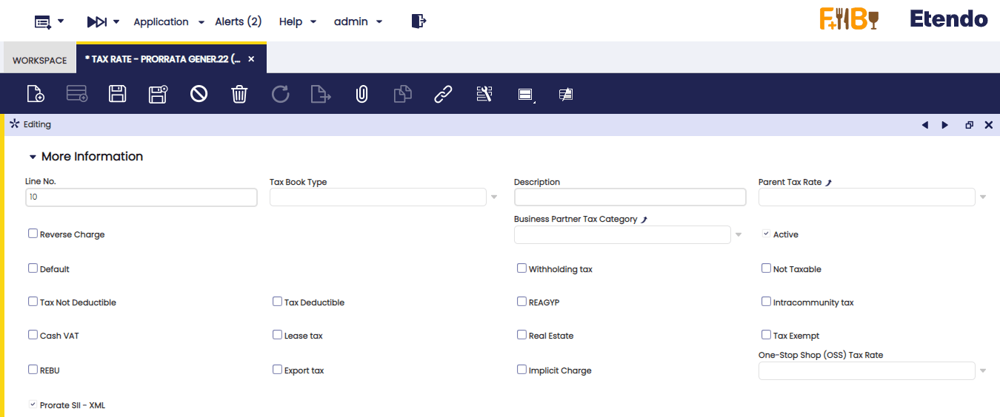
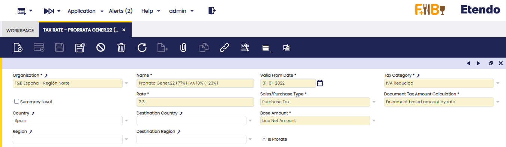
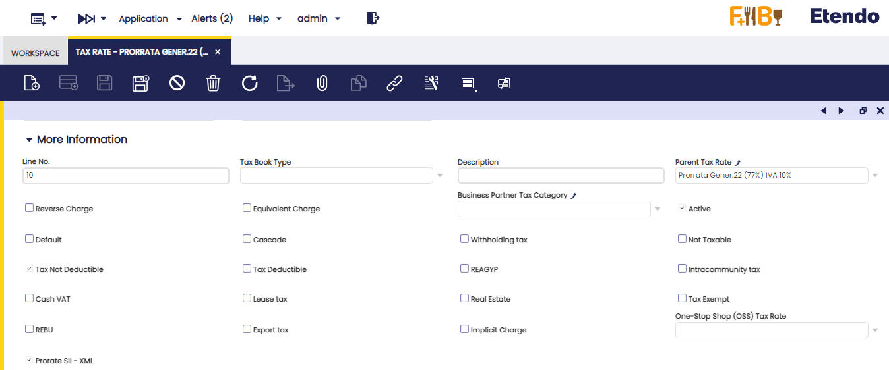

SII para IVA
Javapackages
Javapackage: org.openbravo.module.sii
Javapackage: org.openbravo.module.sii.es_es
Javapackage: org.openbravo.module.sii.template
Introducción
Esta sección explica el contenido del nuevo módulo comercial de Etendo, "Spain AEAT SII template", compatible con Etendo 21Q4 y posteriores, bajo licencia comercial "Etendo Commercial License".
Este módulo forma parte del bundle (paquete) de Localización para España en su versión para Etendo.
Descripción del Módulo
El módulo "Spain AEAT SII template" permite que las organizaciones puedan gestionar el Impuesto sobre el Valor Añadido y el Impuesto General Indirecto Canario de forma telemática, dentro del marco del proyecto "Suministro Inmediato de Información" (SII).
Este proyecto consiste en la gestión de los Libros registro de IVA a través de la Sede Electrónica de la Agencia Estatal de Administración Tributaria (AEAT), mediante el suministro casi inmediato de los registros de facturación. También se lleva la gestión de IGIC a través de la sede electrónica de la Agencia Tributaria Canaria.
El objetivo final de este trámite online del IVA es proporcionar a las empresas información contrastada sobre su liquidación del IVA, esto es un "borrador" de su declaración del IVA, siempre que los clientes/proveedores de dichas empresas se encuentren también acogidos al SII.
Existen dos posibilidades de envío o alta/modificación de los registros de facturas a SII:
- por vía telemática mediante Servicios Web basados en el intercambio de mensajes XML
- a través del Formulario de alta web, que la AEAT pone a disposición de los contribuyentes.
En este portal se pueden consultar, modificar o dar de baja facturas ya enviadas.
{kind=link}
Desde Etendo es posible enviar (dar de alta o modificar) los registros de facturas por vía telemática, opción 1 anterior, lo cual se traduce en la generación de un fichero XML con el siguiente contenido por cada envío a SII:
- una cabecera común con la información del titular de cada libro, así como la información del ejercicio y periodo en que se registran dichas operaciones
- un bloque con el contenido de las facturas.
En definitiva, desde Etendo vamos a poder:
- enviar fácilmente y de forma automática o manual, estos ficheros XML a la AEAT con la información requerida, tanto para el "alta" como para la "modificación" de los registros de facturas.
- recibir los XML de respuesta de la AEAT, respecto de cada tipo de comunicación (alta/modificación)
- consultar en qué estado se encuentra la información ya suministrada a la AEAT, dentro del proceso de contrastación.
Con carácter obligatorio, SII afecta a :
- Inscritos en REDEME (Registro de Devolución Mensual del IVA), salvo renuncia antes de junio de 2017
- Grandes empresas con una facturación superior a 6.101.121,04 €
- Grupos de IVA
- Empresarios o profesionales no establecidos que tengan condición de sujetos pasivos con un periodo de liquidación mensual
- Resto de sujetos pasivos establecidos o no, que voluntariamente quieran acogerse, a través del Modelo 036 de Declaración Censal, que implica autoliquidar el IVA mensualmente, y permanecer el año natural por el que se opte
El nuevo SII conlleva para el contribuyente, entre otras, las siguientes ventajas:
- Reducción de las obligaciones formales, suprimiendo la obligación de presentación de los modelos 347, 340 y 390. Es decir, sólo se tendrá que presentar el Modelo 303 de autoliquidación de IVA
- Obtención de “Datos Fiscales”, ya que en la Sede electrónica dispondrá de un Libro Registro “declarado” y “contrastado” con la información de contraste procedente de terceros que pertenezcan al colectivo de este sistema.
Estos datos fiscales serán una útil herramienta de asistencia en la elaboración de la declaración, reduciendo errores y permitiendo una simplificación y una mayor seguridad jurídica. - Ampliación en diez días del plazo de presentación de las autoliquidaciones periódicas (Modelo 303).
A partir del 1 de julio de 2017 comienza la fase obligatoria de aplicación de este sistema.
Los sujetos pasivos que apliquen el SII desde el 1 de julio de 2017 están obligados a remitir los registros de facturación del primer semestre de 2017 en el periodo desde el 1 de julio al 31 de diciembre de 2017; excepto sujetos en REDEME.
Las facturas de fecha del 1er semestre de 2017 se envían (alta en SII) a través de ficheros XML con un contenido sin las validaciones aplicables a las facturas de fecha desde 1 de julio de 2017.
La AEAT pone a disposición del contribuyente las siguientes URLs que entendemos son de gran utilidad:
- Proyecto SII, en el que se puede encontrar toda la información sobre SII
- Herramienta de cálculo de plazos para la remisión de registros de facturas a SII, que permite calcular la "fecha fin de plazo", el "periodo", y el "ejercicio" para cada tipo de factura en función de su fecha de devengo/recepción y fecha de expedición/registro contable.
Contenido del Módulo
Al instalar este módulo, el usuario podrá comprobar que:
- Se crea un nuevo menú dentro de "Gestión Financiera", denominado "AEAT SII". Este nuevo menú contiene las siguientes pantallas:
- Configuración SII, en la que se podrán configurar todos los parámetros necesarios para el envío correcto de los registros de facturas a SII.
- Consulta Facturas SII, en esta pantalla el usuario tendrá información sobre el estado de cuadre de las facturas enviadas a SII, estado de cuadre recibido de la AEAT.
- Descripciones SII, en esta pantalla se pueden dar de alta descripciones tipo para las operaciones de compra y venta que realice la organización acogida a SII.
- Conexiones a SII, nos muestra el estado de todas las conexiones online con la AEAT referenciadas al Código CSV (Código Seguro de Verificación), proporcionado por la AEAT en cada conexión.
La AEAT responde con un CSV para cada factura enviada. Si se envía un fichero XML con varias facturas, en el XML de respuesta aparecerá un CSV para cada una de ellas. - Monitor SII, desde la que se puede gestionar el estado de las facturas, en relación con su envío a SII, así como realizar envíos de las mismas, según su estado.
- Se crean nuevos campos y pestañas relativos a SII en las ventanas de "Pedidos y Facturas", tanto de compra como de venta, con el fin de añadir la información requerida por parte de SII, respecto del "Alta"/"Modificación" del registro de las facturas.
- Se genera un nuevo campo en la cabecera de las facturas denominado "Modificada por error registral", que permite modificar una factura dada ya de alta en SII.
- Se crea un nuevo campo en la cabecera de las facturas de compra, ventana "Factura (Proveedor)", que permite recoger la "fecha de registro contable" al registrar las facturas recibidas.
- Igualmente, se añaden dos botones en las ventanas de Facturas, tanto de compra como de venta, con el fin de dar de alta (Alta en SII) y, si fuera necesario, modificar (Modificación en SII) el registro de las facturas.
- Se generan dos nuevos procesos en la ventana "Procesamiento de Peticiones", denominados "Proceso de alta en SII" y "Proceso de Modificación en SII por error registral", configurables para cada Organización o "Entidad Legal".
Estos nuevos procesos permitirán el alta/modificación masiva de facturas en SII con la cadencia de envío configurada.
Configuración
Para conseguir un correcto uso del módulo SII es muy importante revisar la configuración de "Terceros", "Productos" e "Impuestos".
Los productos/servicios tienen que tener correctamente configurado su "Grupo/Categoría de Impuestos" (de producto o servicio).
Los terceros (cliente/proveedores) tienen que tener correctamente configurada su "Categoría de impuestos de Tercero", si aplica, así como su "CIF/NIF" o "Clave NIF País Residencia".
Además, los impuestos tienen que estar configurados correctamente, tal y como se explica en el siguiente apartado.
Configuración de impuestos
El proyecto SII amplía el contenido de los libros registro de facturas, tal y como se describe a continuación:
- al enviar el registro de una factura emitida a SII, debemos indicar si esa factura está "Sujeta" a IVA, o, por el contrario, se trata de una operación no sujeta a IVA. Igualmente, las operaciones sujetas a IVA, se deben diferenciar entre "Exentas" y "No Exentas".
- al enviar el registro de una factura recibida a SII, debemos indicar si esa factura es de "Inversión de Sujeto Pasivo" o se trata de una "Adquisición Intracomunitaria de Bienes y/o Servicios", por ejemplo.
Info
La utilización del módulo "Spain AEAT SII", requiere de la versión 1.2.204500 o posterior del módulo de impuestos para España, versión que ya incluye toda la configuración de impuestos requerida para el correcto funcionamiento de envío de registros de factura a SII (alta/modificación).
Configuración de terceros
Todos los terceros, ya sean del tipo "Cliente" o "Proveedor/Acreedor", deben configurarse en la ventana "Terceros".
Es muy importante indicar para cada tercero:
- sus datos de contacto (Nombre Comercial, Nombre Fiscal (Razón Social) o Nombre/Apellidos
- su "Clave NIF País" Residencia):
- 1 - NIF
- 2 - NOI
- 3 - Pasaporte
- 4 - Documento oficial de identificación expedido por el país
- 5 - Certificado de residencia fiscal
- 6 - Otro documento probatorio
- 7 - No censado
- su número de Identificación fiscal, en el caso del NOI se debería incluir el código ISO de país (por ejemplo DE en el caso de Alemania o FR en el caso de Francia).
- la categoría de impuestos de tercero (por ejemplo: Servicios Profesionales Normal, Servicios Profesional Reducido, Autónomo, Recargo de Equivalencia, Revendedores, Régimen Agrario...)
- su localización (País, provincia, dirección).
Tercero con NIF no censado
Se ha creado una nueva "Clave NIF País de Residencia", de valor 7 - No Censado.
Un NIF no censado es un NIF que se ha dado de baja.
Esta nueva clave habrá que configurarla para aquellos terceros con un NIF español válido pero no censado, respecto de los que sea necesario emitir facturas de venta o recibir facturas de compra.

Las facturas con un NIF no censado que se den de alta en SII, quedarán en un estado "Aceptado con errores".
Es muy importante recalcar que la AEAT comprueba en los envíos a SII que el NIF español introducido se corresponda con el nombre/apellidos del tercero persona física (cliente/proveedor).
Si damos de alta un tercero (persona física) con su nombre y un solo apellido, por ejemplo, o con un apellido correcto y el otro no, al enviar la factura de dicho tercero a SII obtendremos un error del tipo: "NIF no identificado".
Puede comprobar los NIF de sus terceros en la siguiente URL de la AEAT: Comprobación NIF terceros a efectos censales.
Respecto de las personas jurídicas o empresas, parece no se está realizando dicha comprobación (correspondencia Empresa-NIF), pero aun así recomendamos que se revise que los terceros estén configurados correctamente.
Gastos de empleado no declarables.
Los empleados de la organización que incurran en gastos a reembolsar, deben darse de alta como Terceros de tipo Empleado en la ventana "Terceros". Se les debe asociar la categoría de impuestos de tercero “No declarable SII”, con el fin de que las facturas de gasto registradas para el reembolso de los gastos, no se incluyan en SII.
Configuración del Local Arrendado
Los locales arrendados sujetos a IVA se deben configurar en la ventana de "Producto", con al menos los siguientes datos:
- Grupo de Impuestos = IVA Normal
- Local arrendado, este campo se debe seleccionar
- Situación del inmueble, en este campo se debe seleccionar la opción que corresponda:
- Locales en el extranjero
- Referencia catastral válida en el País Vasco o en Navarra
- Referencia catastral válida, excepto de País Vasco o Navarra
- Sin referencia catastral
- Referencia catastral, en este se informa de la referencia catastral del local arrendado.
Dependiendo de si el Tercero se configura con la categoría de impuestos de Tercero "Arrendamiento con retención" o "Arrendamientos sin retención", el arrendamiento del local de negocio estará o no sujeto a retención.
Configuración Transmisión de Bienes Inmuebles
Los bienes inmuebles se configuran en la ventana "Producto", asociándolos la categoría de impuestos "IVA Normal B. Inmuebles", por ejemplo.
Configuración SII
En la ventana "Configuración SII" se configuran todos los parámetros necesarios para un correcto envío de registros de facturas a SII (alta/modificación).
{kind=link}
Tal y como se muestra en la imagen anterior, los parámetros de configuración de SII son los siguientes:
- Organización: organización (entidad legal) para la que se configura el envío de registros a SII.
Seleccionada una entidad legal (con o sin contabilidad), todas sus organizaciones "hijas" quedarán igualmente acogidas a SII. - Fecha acogida a SII: check que permite configurar que la organización seleccionada se acoja al SII, esto es, que los registros de sus facturas se envíen (alta/modificación) a la AEAT a través de ficheros XML.
Una vez seleccionado, se muestra el resto de parámetros de configuración de SII.
El usuario lo puede desmarcar con posterioridad, en el caso en que la organización ya no esté acogida a SII.
Si se desmarca este check, todos los demás campos aparecerán como no editables y la organización ya no estará acogida a SII, es decir, ya no será necesario ni se podrá enviar el registro de sus facturas a SII (alta/modificación). - Fecha acogida a SII: campo de fecha en el que se puede indicar la fecha en la que la organización se acoge a SII. En general, esta fecha es el 01-07-2017.
- Ruta de ubicación del certificado electrónico : el usuario debe especificar la ruta en la que se encuentra el certificado de la AEAT válido para dicha organización.
- Contraseña certificada: una vez informado el campo anterior, el usuario debe indicar la contraseña de dicho certificado. El contenido se guardará como texto cifrado.
- Plazo límite de alta en SII: campo "informativo" que por defecto mostrará 8 días como plazo límite de alta en SII, ya que para 2017 y para este tipo de comunicación Alta (A0) ese es el plazo límite.
El usuario tendrá que modificarlo a 4 días o al número de días que indique la AEAT para el alta de registros de factura a realizar a partir del 1 de enero de 2018. - Cadencia Proceso Alta Facturas Venta a SII: en este campo, el usuario puede configurar el número de días naturales de margen que necesita para revisar/modificar las facturas de venta, antes de que estas se envíe de forma automática por el Proceso de "alta"en SII, proceso que se recomienda programar para que sea ejecutado diariamente. Además, se recomienda que el número de días introducido en este campo no supere el plazo límite de alta en SII, que en el caso de las facturas de venta es de 8 días (sin contar sábados, domingos y festivos nacionales) desde la fecha de "expedición" de la factura (fecha factura).
En todo caso, las facturas expedidas se tienen que dar de alta en SII antes del día 16 del mes siguiente al que se produjo el devengo de la operación.
En concreto: - Una factura con fecha de operación 10-07-2017 (devengo) y fecha de expedición 14-07-2017 (fecha factura), tendría que darse de "alta" en SII antes del día 25-07-2017.
Si introducimos una cadencia de 8 días, tendremos 8 días de margen para su revisión/modificación, ya que dicha factura se enviará a SII de forma automática el día 22-07-2017.
Es decir, el proceso automático de "alta" que se ejecute el día 22 de julio, enviará todas las facturas de venta con fecha factura 14 de julio (22 de julio - 8 días). - Una factura con fecha de operación 10-06-2017 (devengo) y fecha de expedición 14-07-2017 (fecha factura), tendrá que darse de "alta" en SII antes del día 16-07-2017.
Es decir, el proceso automático de "alta" que se ejecute el día 14 de julio, ya enviará dicha factura, sin tener en cuenta el número de días introducido en el campo de cadencia. - Cadencia Proceso Alta Facturas Compra a SII: en este campo el usuario puede configurar el número de días de margen que necesita para revisar/modificar las facturas de compra, antes de que éstas se envíen de forma automática por el Proceso de "alta"en SII, proceso que se recomienda programar para que sea ejecutado "diariamente". Además, se recomienda que el número de días introducido en este campo, no supere el plazo límite de alta en SII, que en el caso de las facturas de compra es de 8 días (sin contar sábados, domingos y festivos nacionales) desde la fecha "contable" de la factura.
En todo caso, las facturas de compra se tienen que dar de alta en SII antes del día 16 del mes siguiente al que se liquidó la operación a efectos de IVA.
En concreto: - Una factura con fecha de operación 10-07-2017 y fecha factura/fecha contable 14-07-2017, tendría que darse de "alta" en SII antes del día 25-07-2017.
Si introducimos una cadencia de 8 días, tendremos 8 días de margen para su revisión/modificación, ya que dicha factura se enviará a SII de forma automática el día 22-07-2017.
Es decir, el proceso automático de "alta" que se ejecute el día 22 de julio, enviará todas las facturas de compra con fecha contable 14 de julio (22 de julio - 8 días). - Una factura con fecha de operación 10-06-2017, que se quiera liquidar en la declaración de junio y con fecha contable 14-07-2017, tendrá que darse de "alta" en SII antes del día 16-07-2017.
Es decir, el proceso automático de "alta" que se ejecute el día 14 de julio, ya enviará dicha factura, sin tener en cuenta el número de días introducido en el campo de cadencia. - Entorno de producción SII: este entorno tiene que estar seleccionado para aquellos entornos productivos de organizaciones cuyos registros de factura se tienen que enviar al entorno productivo (final) de SII de la AEAT.
Por defecto se muestra como seleccionado, en cuyo caso las facturas se enviarán al entorno de producción de la AEAT.
Si el usuario quiere realizar pruebas de envío, siempre desde un entorno en test o entidad/organización de pruebas, deberá desmarcarlo. - Adjuntar archivos XML: este campo permite indicar si los ficheros XML enviados a la AEAT y los recibidos como respuesta por parte de la AEAT se deben guardar como ficheros adjuntos en la factura correspondiente.
- Enviar desde 1 de enero 2017 - este campo permite que el proceso automático de alta en SII considere o no las facturas de fecha desde 01-01-2017 hasta 30-06-2017.
Este proceso considera en todo caso las facturas de fecha desde la fecha acogida a SII configurada (01-07-2017). - Si está seleccionado, las facturas de fecha desde 01-01-2017 hasta el 30-06-2017, serán también incluidas en el proceso automático de Alta en SII.
- Si no está seleccionado, las facturas de fecha desde 01-01-2017 hasta el 30-06-2017, no serán incluidas en el proceso de alta automático y, por tanto, habrá que enviarlas de forma manual o a través de Monitor SII, o no enviarlas como es el caso para los sujetos acogidos a REDEME.
- Afectada RECC, este parámetro permite configurar el que para una Organización no acogida al "Régimen Especial del Criterio de Caja" (RECC), pero si afectada por recibir facturas de proveedores acogidos, se muestre o no la pestaña de "Cobros/ Pagos Criterio Caja" dentro de la pantalla "Monitor SII".
Si la organización, llegado un punto, no se viera ya afectada por dicho régimen, podría desactivar este campo, y la pestaña "Cobros/ Pagos Criterio Caja" se dejaría de mostrar en el monitor SII. - Sujeto inscrito en REDEME, si se selecciona este campo, se está indicando que la organización es un sujeto pasivo inscrito en REDEME que, por tanto, no tiene obligación de enviar las facturas del primer semestre de 2017 a SII.
Con este campo se controla que las facturas del primer semestre de este tipo de sujetos pasivo no se puedan dar de alta en SII de forma manual, esto es, desde la venta de factura. - Fecha desde visualización "Monitor SII", en este campo podemos introducir la fecha desde la cual se visualizarán las facturas de compra/venta y los cobros/pagos en RECC en la ventana "Monitor SII" para su alta en SII. Por ejemplo:
- si una organización se acoge al SII el 01-07-2017 y no está inscrita en REDEME, la fecha a introducir en este campo será el 01-01-2017
- si una organización se acoge al SII el 01-07-2017 y está inscrita en REDEME, la fecha a introducir en este campo será el 01-07-2017.
Descripciones SII
En esta ventana es posible introducir descripciones tipo para las operaciones de compra/venta que la Organización acogida a SII realiza.
Las descripciones introducidas en esta pantalla:
- sólo se podrán seleccionar en las facturas de compra, si la descripción está configurada como "Descripción factura de compra"
- sólo se podrán seleccionar en las facturas de venta, si la descripción está configurada como "Descripción factura de venta"
- se podrán seleccionar tanto en las facturas de compra como de venta, si los dos checks "Descripción factura de compra" y "Descripción factura de venta", están seleccionados.
- será el que por defecto se seleccione tanto en facturas de compra como de venta, si además se selecciona el check "Por defecto".
{kind=link}
Además, en las ventanas de
- Pedido de Venta
- Pedido de Compra
- Factura de Venta
- Factura de Compra
existe otro campo de texto libre que se denomina "Descripción SII" que siempre se puede utilizar.
Si en una factura seleccionamos una descripción en el campo "Descripción maestro SII", el campo "Descripción SII" heredará esa descripción para que para esa operación en concreto podamos modificar/completar dicha descripción.
Si una factura tiene ambas descripciones "Descripción SII" y "Descripción maestro SII", siempre prevalece la primera, es decir, será la "Descripción SII" la que se incluya en el fichero XML de "alta" / "modificación" en SII.
Si en un pedido se informa de la "Descripción SII" y la correspondiente factura se crea desde dicho pedido, la descripción introducida en el campo "Descripción SII" del pedido, se rellenará de forma automática en el campo "Descripción SII" de la factura.
Si se copiara desde más de un pedido, solo se trasladaría la primera descripción.
Configuración de la Organización en RECC
Si una organización se acoge al régimen del IVA de Caja, deberán seleccionarse el campo "IVA de Caja" y el campo "Criterio de caja doble" en la ventana "Organización", pestaña "Información".
En este caso, tanto las facturas de compra como de venta nacionales estarán sujetas al RECC y tendrán que darse de alta como tales en SII.
Info
La clave de "RÉGIMEN ESPECIAL / IDENTIFICACIÓN OPERACIONES CON TRASCENDENCIA TRIBUTARIA" del RECC es la "07". Esta clave prevalece sobre las demás.
Esto significa que las operaciones de arrendamiento con RECC no se informarán con la clave propia de los arrendamientos sino con la de RECC que es la 07.
Configuración de proveedores en RECC
Si una organización no se acoge al régimen del IVA de Caja, pero recibe facturas de proveedores acogidos al RECC, tendrá que configurar dichos proveedores como Acogidos al RECC en la ventana "Terceros", pestaña "Proveedor/Acreedor", campo "IVA de Caja.
Configuración de los métodos de pago
Los cobros/pagos de facturas en RECC (IVA de Caja), tienen que darse de alta en SII.
Al dar de alta este tipo de cobros/pagos tenemos que informar del importe, la fecha de cobro/pago y el medio de cobro/pago utilizado, conforme a una definición propia de la AEAT:
- Transferencia "01"
- Cheque "02"
- Otros "04"
Es por ello que en la ventana "Método de Pago" tendremos que configurar el tipo de método de pago, tal y como se explica a continuación:
- los métodos de pago que configuremos con el tipo "Bank Account", serán del tipo 01 = Transferencia
- los métodos de Pago que configuremos con el tipo "Check", serán del tipo 02 = Cheque
- y los métodos de Pago que configuremos con el tipo "Others", serán del tipo 04 = Otros.
{kind=link}
Causas de exención
Tratándose de una operación de venta exenta, la AEAT permite consignar la causa de exención dentro del bloque “Desglose Factura” como “Sujeta” y “Exenta”, utilizando una de las siguientes claves:
“E1: exenta por el artículo 20”
“E2: exenta por el artículo 21”
“E3: exenta por el artículo 22”
“E4: exenta por los artículos 23 y 24”
“E5: exenta por el artículo 25”
“E6: exenta por otros”
En Etendo existen dos opciones para indicar la causa de exención junto con la base imponible:
- En la ventana Factura (Cliente), dentro del grupo de campos AEAT SII, se cumplimentará la causa de exención relacionada con las bases exentas de la factura. El usuario tendrá que asignar un valor del desplegable de forma manual que trasladará al XML la clave que hace referencia a la base imponible exenta en factura.
- En la ventana "Causa de exención" existe la opción de establecer una clave por defecto que se asignará en factura cuando se incorporen líneas que utilicen un impuesto configurado como exento. Es decir, cuando en una factura de venta se introduzca una línea exenta, automáticamente en la cabecera se seleccionará la causa asignada por defecto, siendo modificable si el usuario quisiera elegir otra.
{kind=link}
Configuración alta de factura de compra sólo tras su contabilización
Para organizaciones que desean dar de alta una factura de compra sólo tras su contabilización, existe la opción de controlarlo mediante la activación del check "Alta en SII facturas de compra tras su contabilización" ubicado en la ventana Configuración SII, de manera que la fecha registro contable únicamente se rellenará en el momento que la factura sea contabilizada con el día en el que se produzca el asiento contable independientemente de la fecha imputada en el libro diario, completando así la información necesaria para dar de alta la factura en SII.
{kind=link}
Info
Si se decide optar por esta funcionalidad, es conveniente que la organización no tenga activo el proceso de contabilización automático, ya que imputará la fecha registro contable en el momento de realizar la contabilización.
Configuración de rangos de impuestos - Prorrata SII
Los rangos de impuestos para la prorrata se tendrán que crear siempre de manera manual (tanto el rango “padre” como los rangos “hijos” necesarios). Esto es debido a que el porcentaje de deducción varía año a año al no ser un porcentaje fijo.
En la ventana “Rango impuesto” se ha creado un nuevo check denominado “Is prorate”:
{kind=link}
Al tener activo este check, se mostrará un segundo check nuevo, dentro de la cabecera en el detalle de “More Information” que se llamará “Prorrata SII - XML” que estará marcado por defecto como “Si”: 
{kind=link}
Estos check permitirán, con la configuración correcta que realicemos, enviar al SII información sobre facturas de compra afectadas por la prorrata del IVA.
A continuación, utilizaremos como ejemplo el iva del 10%, para mostrar la configuración que debe realizarse para que la información se envíe de forma correcta al SII:
{kind=link}
1 – Crear un rango padre “Prorrata Gener.22 (77%) IVA 10%”: Lo haremos con la misma configuración que puede tener cualquier rango nacional de la misma categoría, por ejemplo “Prestación servicios nacional 10%“. Las únicas particularidades que debemos tener en cuenta serán las de indicar en el campo “Indice” el valor total del impuesto (en los rangos “padres” estándar es un campo en el que se indica 0) y activar el check “Is Prorate”. En nuestro ejemplo indicaremos en el campo “Indice” el valor 10 y posteriormente marcaremos el check de “Nivel de agrupación”.
{kind=link}
{kind=link}
2 – Crear un rango hijo deducible “Prorrata Gener.22 (77%) IVA 10% (+77%)”: Al igual que en el punto anterior, crearemos un rango “hijo” con la misma configuración que puede tener cualquier rango nacional de la misma categoría, por ejemplo “Prestación servicios nacional 10%“ e indicaremos cual es el rango “padre” (el creado en el punto 1). Las únicas particularidades que debemos tener en cuenta serán las de indicar en el campo “Indice” el valor del porcentaje de impuesto deducible (según nuestro ejemplo indicaremos 7,7) y activar el check “Is Prorate”:
{kind=link}
3 – Crear un rango hijo no deducible “Prorrata Gener.22 (77%) IVA 10% (-23%)”: Crearemos el segundo rango “hijo” de la misma manera que el anterior. Además de indicar en el campo “Indice” el valor del porcentaje de impuesto no deducible (según nuestro
ejemplo indicaremos 2,3) y activar el check “Is Prorate”, tendremos que marcar el check de “Impuesto no deducible” que se encuentra dentro del detalle “More Information”:  
{kind=link}
{kind=link}
Envío de registros de facturas a SII
Una vez configurados todos los parámetros de envío a SII, ya es posible dar de alta/modificar los registros de facturas emitidas/recibidas en SII.
Desde Etendo podremos enviar estos registros (alta/modificación) de forma manual o automática conforme a los requerimientos de la AEAT, según se explica a continuación.
Envío Manual
Alta en SII
Facturas de Venta
Desde la ventana "Factura (Cliente)" se crea una nueva factura de venta, tal y como se crean las facturas de venta en Etendo.
Dentro del grupo de campos "AEAT SII" debemos indicar, tal y como se muestra en la siguiente imagen:
{kind=link}
- la "Fecha Operación" que por defecto se informa con la misma fecha que la "Fecha de la factura", si bien el usuario la puede modificar.
- la Clave Tipo Factura, que por defecto se informará con el valor "Factura", clave tipo factura "F1".
Otros valores posibles son: - "Factura simplificada", clave tipo de factura "F2", respecto de las facturas simplificadas creadas desde cada ticket/pedido registrado. - "Factura rectificativa", clave tipo de factura "R1 a R5", según el "Motivo de la rectificación" seleccionada. - "Asiento resumen facturas simplificadas", clave tipo de factura "F4", respecto de facturas simplificadas que agrupan tickets/pedidos registrados.
Info
No es posible informar este campo de forma automática como "Factura Rectificativa" al crear facturas del tipo "Reverse Sales Invoice", debido a que es posible la creación de Facturas Rectificativas por "Sustitución" como "AR Invoice" (no Reverse).
Se validará que al crear una factura de tipo "Factura Rectificativa" "Por Diferencias", el documento de la transacción sea del tipo "Reverse".
- La Descripción maestro SII de la operación, ya que en los ficheros XML no incluiremos información sobre las líneas de factura. En este caso seleccionamos una descripción del maestro.
- O bien introducimos directamente una descripción de la operación en el campo de texto libre "Descripción SII".
Si seleccionamos una descripción del maestro, ésta se muestra en el campo "Descripción SII" por defecto para que se pueda modificar/completar para esa operación/factura. - Si la factura se crea desde un pedido y ese pedido incluía una "Descripción SII", dicha descripción se incorporará de forma automática en la factura, siempre que el campo "Descripción SII" de la factura esté vacío.
- Si la factura se crea desde varios pedidos, y en todos ellos hay una "Descripción SII", sólo se incorporará en la factura la del primer pedido seleccionado.
Es importante recalcar que en el caso de las facturas de venta, debemos considerar dos fechas para el envío (alta) en SII:
- la fecha factura, ya que ésta es la fecha a partir de la cual se debe contar el plazo de alta en SII, que en 2017 es de 8 días (sin incluir sábados, domingos ni festivos nacionales).
- la fecha de la operación, ya que ésta es la fecha a considerar como fecha de devengo del impuesto correspondiente a la operación que se registra.
Las facturas expedidas deben de enviarse a SII (alta en SII) en el plazo de 8 días (4 días a partir del 01-01-2018) desde la fecha de expedición de la factura y, en todo caso, antes del día 16 del mes siguiente a aquel en el que se hubiera producido el devengo del impuesto correspondiente a la operación que se registra.
Por ejemplo, un empresario A presta un servicio a otro empresario el 2 de agosto de 2017 (fecha de operación), expidiendo la correspondiente factura el 13 de septiembre de 2017 (fecha de factura). El plazo para expedir la factura y remitir el registro de esta factura a través del SII finaliza el 15 de septiembre.
En este ejemplo, el periodo será agosto (fecha de operación) y el ejercicio 2017.
Una vez introducida esta información, podemos completar y contabilizar la factura, o sólo completarla.
En este momento el botón "Alta en SII" se muestra habilitado.
{kind=link}
Al hacer click en ese botón, iniciamos el proceso de alta del registro de esa factura en SII (Tipo de comunicación A0).
Etendo nos muestra un mensaje indicando que:
"Esta acción no reversible (salvo error en la comunicación o error registral) genera el "alta" de la factura en la sede electrónica de la AEAT. Una vez dada de alta sólo será posible "Contabilizar" y "Descontabilizar" la factura, sin permitirse más cambios que las cuentas contables a tener en cuenta en la contabilización, y la fecha contable sólo en el caso de las facturas emitidas. Una vez dada de "alta" en SII de forma correcta, será posible "modificar" la factura en caso de error registral si se habilita el campo de la factura "modificada por error registral". En ese caso ya sólo será posible el envío a SII del registro de "modificación" de la factura".
Es decir, siempre es posible contabilizar/descontabilizar la factura después de darla de alta en SII, pero sólo será posible reactivarla en los siguientes casos:
- Error en la comunicación - el alta en SII ha resultado "Incorrecta" debido a algún error aceptado o debido a error de conexión. En ese caso será posible reactivar la factura para subsanar dicho error y volver a dar de "alta en SII".
- Error registral - el estado del alta en SII de la factura es "Correcto", sin embargo se produjo un error registral que se debe subsanar. En ese caso será posible reactivar la factura, seleccionando el campo "Modificada error registral", realizar los cambios oportunos y enviar la "modificación" del registro de la factura. Ver sección: Modificación en SII.
En la pestaña "Datos SII" de la factura, tendremos acceso a los siguientes datos:
- "Tipo de Comunicación", con el valor "Alta".
- número de "Conexión SII" que también quedará reflejada en la ventana "Conexiones SII".
- el "Código CSV" o código seguro de verificación que la AEAT nos ha indicado relacionado con el alta de esta factura en SII.
La AEAT responde con un CSV para cada factura enviada. Si se envía un fichero XML con varias facturas, en el XML de respuesta aparecerá un CSV para cada una de ellas. - el "Estado registro SII", que en este punto puede ser:
- "Correcto" - la factura se ha registrado de forma satisfactoria en la sede electrónica de la AEAT.
- "Incorrecto" - la factura se ha rechazado totalmente y, por tanto, no está registrada. En este caso, la AEAT nos informará de los datos erróneos. Debemos subsanarlos y volver a enviar la factura.
- "Aceptado con errores" - la factura se ha registrado pero contiene errores que debemos subsanar y volver a enviar. Igualmente, la AEAT nos indicará los errores que se deben subsanar.
- "Error al enviar" - la factura no está registrada, ya que se ha producido un error en la conexión online con la AEAT. Debemos volver a enviar la factura.
- "Anulado" - se trata de un estado que podemos obtener en las respuestas recibidas al hacer una "Consulta a SII". Se ha añadido este estado para poder "gestionarlo" igualmente.
- "No Declarable en SII" - la factura no está registrada, ya que todas sus líneas están asociadas a un impuesto configurado como "No Declarable en SII"
Para la AEAT los errores "Admisibles" son aquellos que serán admitidos por la AEAT.
Se corresponden con errores derivados de las validaciones de negocio de facturas o registros.
Estos errores deberán ser corregidos a través de una nueva petición correcta de modificación sobre aquellas facturas o registros aceptados con errores.
Para la AEAT los errores "No Admisibles" son aquellos errores que en ningún caso podrán ser admitidos por la Agencia en la presentación de facturas o registros de cada libro de registro.
Se corresponden con los errores provocados al no superar las validaciones estructurales y sintácticas del envío y con errores ya tipificados por la AEAT.
Estos errores deberán ser corregidos a través de una nueva petición correcta de envío de las facturas o registros incorrectos.
- Motivo error SII, comunicado por la AEAT
Esta pestaña también incluye información sobre el "cuadre" de la factura, enviado por la AEAT tras realizar la correspondiente "Consulta". Los campos de cuadre son:
- Estado cuadre SII
- y Fecha de cuadre
Y, en el grupo de campos "Archivos Adjuntos", podremos encontrar los ficheros XML de alta y respuesta de la AEAT, si hemos configurado la organización para que se guarden estos ficheros.
Finalmente, en la cabecera de la factura de venta enviada a SII de forma manual o automática, tendremos información del "Ejercicio" y del "Periodo" que se incluyeron en el alta en SII de dicha factura.
{kind=link}
Facturas Rectificativas de Venta
Es posible rectificar una factura de venta dada de alta en SII de forma correcta, si se produce una devolución de mercancía, descuentos posteriores a la venta (Rappels de venta) o situaciones de deuda incobrable o concurso.
La rectificación de facturas de venta se deben gestionar y dar de alta en SII bien sea "Por Diferencias" o "Por Sustitución", tal y como se explica a continuación:
Por Diferencias, en este caso se registra una factura de tipo "Reverse" por el importe negativo correspondiente.
Sería el caso en el que se realizó una venta por valor de 1527.77 € que se dio de alta en SII de forma correcta y, con posterioridad, se devuelve mercancía por parte del cliente por un valor de -27.77 € (15 unidades de producto).
En este caso, al registrar la factura rectificativa por diferencias, dentro del grupo de campos "AEAT SII" deberemos indicar la siguiente información:
- Clave tipo factura = Factura Rectificativa
- Tipo Rectificativa = Por Diferencias
- Motivo de la rectificación = R1...R4, a seleccionar por el usuario según el motivo de la rectificación.
Este tipo de facturas rectificativas se deben crear con documentos del tipo "Reverse" (por ejemplo: "Reverse Sales Invoice"), e importes negativos, tal y como se muestra en la pantalla. Etendo mostrará un error en caso contrario.

Al dar de Alta esa factura en SII, el fichero XML registrará de forma automática la siguiente información:
- Tipo Factura = R1
- Tipo Rectificativa = I
- Importe total = -27.77
{kind=link}
Por Sustitución, en este caso se produce una anulación de la factura original (ya dada de alta en SII) y la creación de una nueva factura con los importes correctos.
La anulación de la factura original se puede realizar a través de la opción "Reactivar-Anular" de Etendo. Esta acción creará una factura del tipo "Reverse" con los siguientes datos:
- Tipo de documento = Reverse Sales Invoice
- Fecha de operación = fecha de operación de la factura original
- Clave tipo factura = Factura
Al dar de Alta esa factura de anulación en SII, el fichero XML registrará de forma automática la siguiente información:
- Tipo Factura = F1
- Importe total = -185.13
Posteriormente, se crea la nueva factura con los importes correctos y con los siguientes datos:
- Tipo de documento = AR Invoice (no reverse)
- Clave tipo factura = Factura Rectificativa
- Tipo Rectificativa = Por Sustitución
- Motivo de la rectificación = R1...R4, a seleccionar por el usuario según el motivo de la rectificación.
- Fecha de operación = fecha de operación de la factura original
{kind=link}
Al dar de Alta esta factura rectificativa por sustitución en SII, el fichero XML registrará de forma automática la siguiente información:
- Tipo Factura = R1
- Tipo Rectificativa = S
- Importe total = 92.57
{kind=link}
Tanto en facturas rectificativas de venta por diferencias como por sustitución, el usuario deberá asignar la fecha de operación correspondiente a la factura original (devengo de la operación). Sin embargo, en facturas rectificativas el periodo de alta en SII será el correspondiente a la fecha factura, incorporándose a la declaración de IVA en dicho mes.
Facturas de Compra
El proceso de registro y alta en SII de este tipo de facturas es muy similar al de las facturas de venta.
La información del alta del registro de la factura de compra en SII se recogerá de la ventana "Factura(Proveedor)", una vez que la factura de compra correspondiente esté en estado "Completado".
Dentro del grupo de campos "AEAT SII" debemos indicar, tal y como se muestra en la siguiente imagen:
{kind=link}
- la "Fecha Operación", que por defecto se informa con la misma fecha que la "Fecha de la factura", fecha actual o de creación de la factura en Etendo, si bien el usuario la puede modificar.
- la "Fecha registro contable", que por defecto y para las facturas que se crean de forma manual se informa con la fecha actual, o fecha de creación de la factura en Etendo y, por tanto, registro de la factura recibida en Etendo.
Esta fecha de registro contable no tiene por qué coincidir con la fecha contable de la factura de compra. - la Clave Tipo Factura, que se debe puede informar con los siguientes valores:
- "Factura", que se corresponde con una clave de tipo de Factura "F1"
- "Importación (DUA)", que se corresponde con una clave de tipo de Factura "F5"
- "Liquidación Complementaria Aduana IVA a la importación", que se corresponde con una clave de tipo de Factura "LC"
- "Justificante contable", que se corresponde con una clave de tipo de Factura "F6"
En el caso de las facturas de compra no es necesario indicar si se trata o no de una factura rectificativa.
- La Descripción maestro SII de la operación, ya que en los ficheros XML no incluiremos información sobre las líneas de factura. En este caso, seleccionamos una descripción del maestro.
- O bien introducimos directamente una descripción de la operación en el campo de texto libre "Descripción SII".
Si seleccionamos una descripción del maestro, ésta se muestra en el campo "Descripción SII" por defecto para que se pueda modificar/completar para esa operación/factura. - Si la factura se crea desde un pedido y ese pedido incluía una "Descripción SII", dicha descripción se incorporará de forma automática en la factura, siempre que el campo "Descripción SII" de la factura esté vacío.
- Si la factura se crea desde varios pedidos, y en todos ellos hay una "Descripción SII", sólo se incorporará en la factura la del primer pedido seleccionado.
Y además, debemos reflejar el número de factura del proveedor en el campo "Referencia del Proveedor".
Las facturas recibidas deben enviarse a SII (alta en SII) en el plazo de 8 días (4 días a partir del 01-01-2018) naturales desde la fecha del registro contable de la factura, excluyendo sábados, domingos, y feriados reconocidos nacionalmente y, en todo caso, antes del día 16 del mes siguiente al periodo de liquidación en que se hayan incluido las operaciones correspondientes (período en que se deduce el IVA soportado). El periodo límite puede ser más corto que los días iniciales del plazo. Si el día 15 es Sábado, Domingo o feriado, la fecha límite se extiende al siguiente día hábil.
Por tanto, en el caso de las facturas de compra, debemos considerar la fecha de registro contable de la factura como fecha a tener en cuenta respecto del alta en SII.
Info
Se puede utilizar la Calculadora de Plazos de la Agencia Tributaria para realizar simulaciones para diferentes casos y ayudar a clarificar cualquier duda respecto a los plazos de liquidación.
Y, además, tenemos que tener en cuenta las siguientes fechas para el cálculo del periodo de liquidación del impuesto que se refleja en el XML dentro de la sección "Periodo de Liquidación" (Ejercicio/Periodo):
- la fecha de operación de la factura
- la fecha del registro contable de la factura
- y la fecha de alta en SII de la factura.
De modo que:
- si la fecha de operación se encuentra en el mismo mes (por ejemplo, julio) que la fecha de registro contable y alta en SII, el periodo reflejado en el XML será ese mismo (julio, en nuestro ejemplo)
- si la fecha de operación se encuentra en el mes de junio, la fecha de registro contable en julio y la fecha de alta en SII es anterior al 16 de julio, el periodo reflejado en el XML será junio.
- Si, por el contrario, y con las mismas fechas anteriores, la fecha de alta en SII es posterior al 15 de julio, el periodo reflejado en el XML será julio.
Por ejemplo:
Un empresario A vende mercancía a otro empresario B el 03 de julio de 2022. El empresario A expide la factura el 04 de julio. El empresario B recibe la factura el 30 de julio y efectúa su registro contable el 10 de octubre.
Caben dos posibilidades:
- El empresario B remite los registros de la factura el 15 de octubre consignando en el Libro Registro de facturas recibidas, Ejercicio: 2022, Período: 09.
- El empresario B remite los registros de la factura el 16 de octubre consignando en el Libro Registro de facturas recibidas, Ejercicio: 2022, Período: 10.
Una vez introducida esta información, podemos completar y contabilizar la factura, o sólo completarla.
En este momento el botón "Alta en SII" se muestra habilitado.
{kind=link}
Al hacer click en ese botón, iniciamos el proceso de alta del registro de esa factura en SII (Tipo de comunicación A0).
Etendo nos muestra un mensaje indicando que:
"Esta acción no reversible (salvo error en la comunicación o error registral) genera el "alta" de la factura en la sede electrónica de la AEAT. Una vez dada de alta sólo será posible "Contabilizar" y "Descontabilizar" la factura, sin permitirse más cambios que las cuentas contables a tener en cuenta en la contabilización, y la fecha contable sólo en el caso de las facturas emitidas. Una vez dada de "alta" en SII de forma correcta, será posible "modificar" la factura en caso de error registral si se habilita el campo de la factura "modificada por error registral". En ese caso ya sólo será posible el envío a SII del registro de "modificación" de la factura".
Es decir, siempre es posible contabilizar/descontabilizar la factura después de darla de alta en SII, pero sólo será posible reactivarla en caso de error en la comunicación o error registral, tal y como se explicó para las facturas de venta.
Info
En el caso de las facturas de compra, no será posible cambiar la fecha contable de facturas dadas de alta en SII de forma correcta.
Finalmente, en la cabecera de la factura de compra enviada a SII de forma manual o automática, tendremos información del "Ejercicio" y del "Periodo" que se incluyeron en el alta en SII de dicha factura.
{kind=link}
Facturas de Importación (DUA)
Las importaciones con DUA se deben anotar en el Libro Registro de Facturas Recibidas con la clave tipo de factura “F5”.
Deberán consignarse, como número de factura y fecha de expedición, el número de referencia que figura en el propio DUA y la fecha de su admisión por la Administración Aduanera respectivamente.
En los datos identificativos correspondientes al proveedor se consignarán los del importador y titular del libro registro, esto es la organización de Etendo.
Finalmente, y respecto de la factura del transitario, se consignará únicamente la prestación de servicios sujeta y no exenta, con clave de tipo de factura "F1".
Para registrar en Etendo este tipo de operaciones "Importaciones con DUA" debemos seguir los pasos siguientes en la ventana "Factura (Proveedor)":
- Crear una nueva factura para el tercero "Transitario" con su número de factura o "Referencia del Proveedor", con la siguiente información en el grupo de campos "AEAT SII" e "Import (DUA):
- Clave tipo factura: Importación (DUA)
- DUA: número de referencia que figura en el propio DUA
- Fecha DUA: fecha de la admisión del DUA por la Administración Aduanera respectivamente
- en la pestaña "Líneas" introducir los datos de la factura del transitario, incluida su prestación de servicios sujeta y no exenta.
- en la pestaña "Impuestos" incluir de forma manual una nueva línea de impuestos para impuestos del tipo "Importaciones 21%", que incluya la base imponible de importación y su correspondiente cuota.
Una vez completada y dada de alta en SII, obtendremos un XML con la información requerida por parte de la AEAT.
En los casos en que una operación de "Importación (DUA)", se relacione con más de un DUA será posible seleccionar el check "Multiple DUA".
Al seleccionar esta opción:
- los campos "DUA" y "Fecha DUA" de la cabecera de la factura no se muestran ya que dichos campos se tienen que informar en la pestaña "Impuestos", con el fin de relacionar el DUA y su fecha, con la base imponible de importación correspondiente, tal y como se muestra en la siguiente imagen.
{kind=link}
Facturas de Compra (alta tras la contabilización)
Aquellas organizaciones que activen el check "Alta en SII facturas de compra tras su contabilización" en la ventana Configuración SII, podrán enviar sus facturas de compra a SII tras su contabilización.
El proceso de registro y alta en SII de este tipo de facturas es muy similar al resto de facturas de compra.
La información del alta en SII del registro de la factura de compra se recogerá de la ventana "Factura(Proveedor)", una vez que la factura de compra correspondiente esté en estado "Completado" y "Contabilizado".
Dentro del grupo de campos "AEAT SII" estarán informados los campos:
- la "Fecha Operación", que por defecto se informa con la misma fecha que la "Fecha de la factura", fecha actual o de creación de la factura en Etendo, si bien el usuario la puede modificar.
- la "Fecha registro contable", que por defecto se consignará en blanco hasta el momento en que la factura sea contabilizada con la fecha en la que se ha realizado el asiento, independientemente de la fecha en la que se hayan imputado los apuntes contables en el libro diario. El botón de Alta en SII permanecerá deshabilitado hasta que se produzca la contabilización del documento. Si la factura se descontabiliza antes de suministrarla a SII, la fecha registro contable eliminará su contenido. En caso de que se hubiera producido ya el alta, y fuera necesaria realizar una Modificación por error registral, la fecha registro contable no cambiará al descontabilizar y reactivar la factura.
- la Clave Tipo Factura, que se debe puede informar con los siguientes valores:
- "Factura", que se corresponde con una clave de tipo de Factura "F1"
- "Importación (DUA)", que se corresponde con una clave de tipo de Factura "F5"
- "Liquidación Complementaria Aduana IVA a la importación", que se corresponde con una clave de tipo de Factura "LC"
- "Justificante contable", que se corresponde con una clave de tipo de Factura "F6"
En el caso de las facturas de compra no es necesario indicar si se trata o no de una factura rectificativa.
- la Descripción maestro SII de la operación, ya que en los ficheros XML no incluiremos información sobre las líneas de factura. En este caso seleccionamos una descripción del maestro.
- o bien introducimos directamente una descripción de la operación en el campo de texto libre "Descripción SII".
Si seleccionamos una descripción del maestro, ésta se muestra en el campo "Descripción SII" por defecto para que se pueda modificar/completar para esa operación/factura. - Si la factura se crea desde un pedido y ese pedido incluía una "Descripción SII", dicha descripción se incorporará de forma automática en la factura, siempre que el campo "Descripción SII" de la factura esté vacío.
- Si la factura se crea desde varios pedidos, y en todos ellos hay una "Descripción SII", sólo se incorporará en la factura la del primer pedido seleccionado.
Y además, debemos reflejar el número de factura del proveedor en el campo "Referencia del Proveedor".
Las facturas recibidas deben de enviarse a SII (alta en SII) en el plazo de 8 días (4 días a partir del 01-01-2018) desde la fecha del registro contable de la factura y, en todo caso, antes del día 16 del mes siguiente al periodo de liquidación en que se hayan incluido las operaciones correspondientes (período en que se deduce el IVA soportado).
Por tanto, en el caso de las facturas de compra, debemos considerar la fecha de registro contable de la factura como fecha a tener en cuenta respecto del alta en SII.
Y, además, tenemos que tener en cuenta las siguientes fechas para el cálculo del periodo de liquidación del impuesto que se refleja en el XML dentro de la sección "Periodo de Liquidación" (Ejercicio/Periodo):
- la fecha de operación de la factura
- la fecha del registro contable de la factura
- y la fecha de alta en SII de la factura.
De modo que:
- Sólo se dará de alta en SII una factura que se encuentre en estado "Completado" y "Contabilizado".
- Cuando el usuario contabilice la factura, el campo Fecha registro contable se rellenará automáticamente con la fecha del día en que se registra el asiento en contabilidad.
- Si el documento es descontabilizado antes de realizar el alta el campo Fecha registro contable eliminará su contenido.
- Si el documento es descontabilizado tras realizar el alta para proceder a una modificación por error registral, el campo fecha registro contable mantendrá su contenido y la fecha registro contable continuará siendo la misma que se informó en la comunicación de alta.
Por ejemplo:
Un empresario A vende mercancía a otro empresario B el 26 de abril de 2022. El empresario A expide la factura el 27 de abril. El empresario B recibe la factura el 30 de abril y efectúa su registro contable el 01 de mayo remitiendo los registros de la factura el 12 de julio, por lo que el periodo asignado será 07, ejercicio 2022.
Una vez introducida esta información, podemos completar y contabilizar la factura.
Tras la contabilización del documento, el botón "Alta en SII" se muestra habilitado.
{kind=link}
Al hacer click en ese botón, iniciamos el proceso de alta del registro de esa factura en SII (Tipo de comunicación A0).
Etendo nos muestra un mensaje indicando que:
"Esta acción no reversible (salvo error en la comunicación o error registral) genera el "alta" de la factura en la sede electrónica de la AEAT. Una vez dada de "alta" en SII de forma correcta, será posible "modificar" la factura en caso de error registral si se habilita el campo de la factura "modificada por error registral". En ese caso ya sólo será posible el envío a SII del registro de "modificación" de la factura".
Siempre es posible contabilizar/descontabilizar la factura después de darla de alta en SII, pero sólo será posible reactivarla en caso de error en la comunicación o error registral.
El día 26 de julio el empresario B se da cuenta que tuvo un error en el momento de introducir el precio del producto en la línea de la factura, por lo que es necesario realizar una modificación por error registral (Tipo de comunicación A1). El proceso a seguir es "Descontabilizar", activar el check "Modificar por error registral" y "Reactivar" el documento. Tras hacer la modificación correspondiente, de nuevo se completa y contabiliza el documento antes de pulsar el botón "Modificación en SII", manteniéndose la fecha registro contable que inicialmente se informó en SII.
{kind=link}
En el caso de las facturas de compra, tampoco será posible cambiar la fecha contable de facturas dadas de alta en SII de forma correcta.
Info
Si se decide optar por esta funcionalidad, es conveniente que la organización no tenga activo el proceso de contabilización automático, ya que imputará la fecha registro contable en el momento de realizar la contabilización.
Modificación en SII
Este tipo de comunicación implica la modificación de los registros de factura ya dados de alta en SII por errores registrales que no afecten a:
- el "emisor de la factura", esto es la organización o entidad legal que emite/recibe la factura
- la "fecha de factura", esto es la fecha factura (expedición) de las facturas de venta, fecha factura en las de compra
- y el "número de factura", o "referencia proveedor" en las facturas de compra que en ningún caso podrán modificarse.
Por ejemplo, nos damos cuenta de un error en el rango de impuesto seleccionado en una factura que ya está dada de alta en SII.
En esos casos tendremos que modificar la factura y enviarla de nuevo a SII, con un tipo de comunicación diferente que es A1 "Modificación (Corrección por errores registrales).
Se ha creado un nuevo campo en la cabecera de las facturas (tanto de compra como de venta), sección "AEAT SII" denominado, "Modificada por error registral". Este nuevo campo sólo se habilita si:
- la factura está en estado "Completado"
- y, además, está dada de alta en SII (Alta en SII= Si) correctamente, "Estado Registro SII" = Correcto.
Al seleccionar este nuevo campo, es posible descontabilizar y reactivar la factura, modificar el error cometido, para finalmente volver a completar la factura.
En ningún caso será posible modificar:
- el emisor de la factura (Organización)
- la fecha de factura (fecha de expedición en las facturas de venta/fecha factura en las facturas de compra)
- el número de factura (Nº documento en las facturas de venta/Referencia del proveedor en las facturas de compra)
El botón "Modificación en SII" nos permitirá enviar la modificación del registro de la factura a SII, tal y como se muestra en la pantalla siguiente:
{kind=link}
El suministro de este tipo de registros de "modificación" deberá realizarse antes del día 16 del mes siguiente al periodo al que se refiera la declaración en la que deba tenerse en cuenta dicha modificación.
Envío Automático
Dentro de la venta "Procesamiento de Peticiones" se han creado dos nuevos procesos "Proceso de alta en SII" y "Proceso de modificación en SII por error registral", que pueden configurarse para cada organización o entidad legal.
Tal y como sucede con otros procesos de Etendo, éstos podrán configurarse para ser ejecutados de forma inmediata, planificada o programada con una cierta frecuencia.
Se recomienda que este proceso se programe con una frecuencia "diaria", ya que tal y como se explica a continuación, este proceso tendrá en cuenta el número de días de cadencia configurados tanto para el alta en SII de las facturas de compra como de las facturas de venta, para la organización.
Sería posible también que la opción diaria sólo incluyera los días de la semana y, por lo tanto, no se tuvieran en cuenta para su ejecución ni los fines de semana.
Alta en SII
Este proceso permite el "alta" masiva (tipo de comunicación A0) en SII de todas las facturas de compra y venta en estado "completado".
{kind=link}
En el caso de las facturas de venta, este proceso tendrá en cuenta:
- la "fecha de operación" y la "fecha de expedición" de las facturas
- y la "cadencia del proceso de alta en SII", establecido para las facturas de venta en la ventana "Configuración SII", para cada Organización
Por ejemplo, en el escenario siguiente:
- factura de venta con fecha de operación 01-07-2022
- fecha de expedición 05-07-2022
- cadencia de envío establecida en 8 días
aunque, programemos el proceso de alta en SII con una frecuencia diaria, esta factura sólo se dará de alta en SII de forma automática, a través de este proceso, el día 13-07-2022.
Dicho de otro modo, el día 13-07-2022 se enviarán las facturas con fecha de expedición 05-07-2022 (13-07-2022- 8 días).
El plazo límite de alta en SII de esta factura para 2022 sería el 17-07-2022, ya que en este cómputo no se deben tener en cuenta los sábados, domingos ni festivos nacionales.
En el escenario siguiente:
- factura de venta con fecha de operación 20-06-2022
- fecha de expedición 13-07-2022
- cadencia de envío establecida en 8 días
aunque, programemos el proceso de alta en SII con una frecuencia diaria, esta factura se dará de alta en SII de forma automática, el mismo día de su expedición, ya que la fecha de la operación y la fecha de factura se encuentran en periodos diferentes.
El plazo límite de alta en SII de esta factura para 2022 sería el 15-07-2022
En el caso de las facturas de compra, este proceso tendrá en cuenta:
- la fecha contable y la fecha de registro contable de la factura
- y la "cadencia del proceso de alta en SII", establecido para las facturas de venta en la ventana "Configuración SII", para cada Organización
Por ejemplo, en el escenario siguiente:
- factura de compra con fecha contable 05-07-2022
- fecha de registro contable 14-07-2022 (ya que la empresa decide deducir el IVA en julio)
- cadencia de envío establecida en 8 días
aunque programemos el proceso de alta en SII con una frecuencia diaria, esta factura sólo se dará de alta en SII de forma automática, a través de este proceso, el día 22-07-2022.
Dicho de otro modo, el día 22-07-2022 se enviarán las facturas con fecha de registro contable 14-07-2022 (22-07-2022 - 8 días).
El plazo límite de alta en SII para esta factura sería el 26-07-2022.
En el escenario siguiente:
- factura de compra con fecha contable 20-06-2022
- fecha de registro contable 13-07-2022
- cadencia de envío establecida en 8 días
aunque, programemos el proceso de alta en SII con una frecuencia diaria, esta factura se dará de alta en SII de forma automática, el mismo día de su fecha de registro contable, ya que la fecha contable y la fecha de registro contable se encuentran en periodos diferentes.
El plazo límite de alta en SII de esta factura sería el 15-07-2022.
Gestión y envío de registros desde el "Monitor SII"
Desde la ventana "Monitor SII" podemos realizar gestionar y realizar envíos masivos de facturas emitidas/recibidas a SII, así como de los cobros/pagos de facturas en RECC y los cobros en metálico, esta última información a enviar de forma anual.
Tal y como se muestra en la siguiente pantalla, filtramos por:
- Alta en SII = No
- Estado doc = Completado
- Tercero = Cliente España
seleccionamos varias facturas y procedemos a su Alta en SII.
{kind=link}
Lo mismo aplica para el envío masivo de modificaciones de facturas emitidas/recibidas. En ese caso, dichas facturas deberán encontrarse marcadas como "Modificada por error registral" = SI.
Tal y como se muestra en la siguiente pantalla, filtramos por:
- Alta en SII = SI
- Estado registro = Correcto
- Tercero = Cliente España
seleccionamos varias facturas y procedemos a su Modificación en SII.
{kind=link}
Creación automática de facturas de venta
Generar facturas (manualmente)
El proceso "Generar facturas (manualmente)” permite crear facturas de venta del tipo "AR Invoice" en estado completado.
Debido a eso, en los pedidos de venta se han creado dos nuevos campos dentro del grupo de campos "AEAT SII", con el fin de indicar en cada pedido de venta:
- la "Fecha de operación", si ésta es conocida
- y la "Descripción SII" de la operación.
En ningún caso es posible enviar pedidos de venta a SII (alta/modificación).
Tal y como se muestra en la pantalla, es posible seleccionar los pedidos a factura, e indicar una fecha de factura:
{kind=link}
Al procesar, Etendo nos informa de que se han creado las facturas correspondientes, que tendrán ya un estado de "Completado".
Info
Cada una de estas facturas heredará la fecha de operación y la descripción SII introducidas en el pedido. Es importante recalcar que el usuario siempre las puede modificar, si es necesario, antes de dar de alta en SII dicha factura.
Info
La clave de tipo factura no se informa por defecto, por tanto el usuario, antes de dar de alta en SII, tendrá que seleccionar el valor "Factura".

Si el pedido de venta o los pedidos de venta fueran negativos, este proceso generaría facturas de tipo "AR Invoice" que tendremos que reactivar y modificar antes de dar de alta en SII:
- El tipo de documento debe cambiar a un tipo "reverse" como "Reverse Sales Invoice".
- La clave de tipo factura se debe seleccionar como "Factura Rectificativa", e introducir:
- el tipo de rectificativa
- y el motivo de la rectificación.
{kind=link}
Crear Líneas de
Pedidos
Las facturas de compra/venta pueden crearse desde pedidos con la opción "Crear Lineas de". Varios pedidos pueden seleccionarse para ser incluidos en una factura.
Respecto de la información de SII, tenemos que tener en cuenta que:
- Si la factura de venta/compra que se está creando no tiene información en el campo "Descripción SII", se tomará la "Descripción SII" introducida en el primer pedido seleccionado de venta/compra.
- La fecha de operación de la factura será por defecto la fecha de la factura y no se modificará al copiar los pedidos. El usuario tendrá que modificarla de forma manual si es diferente a la fecha de factura.
- Si el primer pedido que se copia es negativo (en el caso de las facturas de venta), la factura de venta correspondiente se creará como "Factura Rectificativa", "Por diferencias", con el "Motivo de rectificación" R1, pudiendo el usuario cambiar esa información si fuera necesario, al añadir líneas de pedido adicionales positivas o negativas.
- Las facturas de compra creadas desde pedidos positivos, se crearán con clave tipo factura "Factura", con tipo de documento "AP Invoice".
- Las facturas de compra creadas desde pedidos negativos, se crearán con clave tipo factura "Factura", y el usuario debería crearlas con un tipo de documento reverse "Reverse Purchase Invoice", ya que en el caso de las facturas recibidas
no es obligatorio informar de si una factura es rectificativa o no, sea positiva o negativa.
Albaranes (Albarán (Cliente)/Recibo devolución de material o Albarán (Proveedor)/Devolución a albarán de Proveedor)
Las facturas de compra/venta pueden crearse desde albaranes/devoluciones con la opción "Crear Lineas de". Varios albaranes/devoluciones pueden seleccionarse para ser incluidos en una factura.
Respecto de la información de SII, tenemos que tener en cuenta que:
- Estos albaranes y devoluciones no incorporan información de SII, por tanto, la información de SII de la cabecera de las facturas deberá ser rellenada por el usuario, tanto la fecha de operación, como la clave de tipo factura y la descripción SII.
Casos de uso
Dentro de este apartado se describen diferentes casos de uso tanto para las facturas de venta (LRFE) como de compra (LRFR), y su registro de "Alta" en SII.
Info
Es importante recalcar que las fechas de operación que se muestran en los XML no coinciden con las fechas descritas en los casos de uso, ya que a fecha de junio no es posible enviar facturas con fechas de julio (fechas ejemplo).
Libro de Facturas Emitidas
La información del registro de alta/modificación de las facturas de venta se obtiene de la ventana "Factura (Cliente)", que como ya se ha explicado se ha modificado para incluir información requerida por SII (fecha operación, clave tipo factura, descripción SII, etc).
El registro de alta/modificación en SII de las facturas de venta varía en función de las siguientes variables:
- la localización del "Tercero" (Cliente), ya sea éste extranjero, intracomunitario o nacional, que conlleva la sujeción o no al IVA y dentro de la sujeción, su exención.
- el tipo de factura emitida, esto es "Factura"(F1), "Factura Rectificativa"(RX), "Factura Simplificada" (F2) o "Asiento Resumen de Factura Simplificada" (F4).
- la sujeción al RECC de la organización
- la venta a minoristas en las que se incluye "Recargo de Equivalencia"
- la venta a revendedores en Inversión del Sujeto Pasivo
y en función de que la factura emitida incluya:
- el arrendamiento de local de negocio sujeto o no a retención
- una operación sujeta a IPSI/IGIC
- o una transmisión de un bien inmueble sujeta a IVA
así como que la factura emitida
- se liquide con un cobro en metálico superior a 6000.00€
- o tenga una fecha de factura (expedición) anterior al día 1 de julio de 2017.
En los apartados siguientes se analiza la información que debemos recoger en las facturas de venta de Etendo para cada caso de uso, así como la información relevante que el XML de alta/modificación del registro de dichas facturas debe incluir.
La principal diferencia entre los XML de alta/modificación de los registros de facturas de venta de cualquier tipo es que:
- Los XML de alta incluirán un tipo de comunicación \<sii:TipoComunicacion>A0
- Los XML de modificación incluirán un tipo de comunicación
\
Tercero (Cliente) Nacional
Factura emitida con IVA Nacional por entrega de bienes y prestación de servicios.
La organización F&B España presta un servicio a su cliente "Alimentos y Supermercados", identificado con un NIF válido de España.
La operación se realiza el 2 de agosto de 2017. F&B España emite la correspondiente factura de venta con fecha 7 de agosto de 2017.
En este caso, y dado que el IVA se ha devengado en el periodo de agosto (fecha operación 2 de agosto), el plazo límite de expedición de la factura de venta y su alta en SII sería el 15 de septiembre.
Al expedirse la factura con fecha 7 de agosto, se está en plazo. Dicha factura se tendrá que dar de alta en SII antes del día 18 de agosto de 2017 (aplica cómputo 8 días, sin incluir sábados, domingos ni festivos nacionales).
Al expedir esta factura en Etendo, los tipos de impuestos que se seleccionan por defecto serán del tipo:
- Entregas IVA 10%
- Prestación servicios nacional 21%
Una vez completada la factura, se procede a su Alta en SII, bien de forma manual o automática.
El XML de alta en SII contendrá la siguiente información:
- un tipo de Factura "F1"
- con clave régimen especial "01" (Régimen General)
- Sujeta No Exenta "S1"
- con desglose por detalle de IVA.
{kind=link}
Es importante recalcar que:
- si la factura de venta nacional incluye más de un bien/servicio al mismo tipo impositivo, en el XML la información se mostrará agrupada por dicho tipo impositivo (por ejemplo 21%)
- si la factura de venta incluye más de un bien/servicio con distintos tipos impositivos, en el XML la información se mostrará desglosada por "Detalle de IVA" o tipo impositivo.
Tercero (Cliente) extranjero
Factura emitida por la exportación de bienes y prestación de servicios en el extranjero.
La organización F&B España emite el 13 de septiembre de 2017 una factura a la Empresa Z situada en Marruecos por la venta de un equipo y el servicio de instalación. La operación se produjo el día 29 de agosto. Este tercero debe identificarse en Etendo con un "Clave NIF País Residencia", distinta de 1 (NIF) y 2 (NOI).
En este caso, y dado que el IVA se ha devengado en el periodo de agosto (fecha operación 29 de agosto), el plazo límite de expedición de la factura de venta y su alta en SII sería el 13 de septiembre.
Al expedirse la factura con fecha 13 de septiembre, opera ficha límite, es decir, esta factura tendrá que enviarse a SII antes del día 15 de septiembre.
Al expedir esta factura en Etendo, los tipos de impuestos que se seleccionan por defecto serán del tipo:
- Exportaciones (%N=>0%)
- Servicios prestados internacional (%N=>0%)
La entrega del bien es una operación sujeta pero exenta de IVA.
La prestación del servicio es una operación no sujeta por reglas de localización
Una vez completada la factura, se procede a su Alta en SII, bien de forma manual o automática.
El XML de alta en SII contendrá la siguiente información:
- un tipo de Factura "F1"
- con clave régimen especial "02" (Exportación)
- con desglose por tipo de Operación
- prestación del servicio "No sujeto por reglas de localización"
- exportación del bien "Sujeta y Exenta", con clave de causa de exención "E2" (Exportación).
{kind=link}
Es importante recalcar que:
- si la factura incluye una entrega de un bien a Canarias (tipo impositivo "Entregas a Canarias,Ceuta y Melilla (%N=>0%)")
- y una prestación de servicios que se localiza en Canarias (tipo impositivo "Servicios a Canarias, Ceuta y Melilla (%N=>0%)")
el XML generado incluye igualmente:
- un tipo de Factura "F1"
- con clave régimen especial "02" (Exportación)
- con desglose por tipo de Operación
- prestación del servicio "No sujeto por reglas de localización"
- exportación del bien "Sujeta y Exenta", con clave de causa de exención "E2" (Exportación). Esta clave se puede configurar para que aparezca por defecto en la ventana "Causa de exención" o indicar en la cabecera de la factura.
{kind=link}
Tercero (Cliente) Intracomunitario
Factura emitida con IVA Intracomunitario por entrega de bienes y prestación de servicios.
La organización F&B España emite el día 18 de agosto de 2017 una factura por la entrega de hardware (por importe de 1000.00 €) y su instalación (por importe de 800.00 €) a un cliente localizado en Francia. La operación se realiza el día 10 de agosto de 2017.
Este cliente localizado en Francia, debe estar identificado en Etendo con una "Clave NIF País Residencia" de tipo 2 = NOI.
En este caso, y dado que el IVA se ha devengado en el periodo de agosto (fecha operación 10 de agosto), el plazo límite de expedición de la factura de venta y su alta en SII sería el 15 de septiembre.
Al expedirse la factura con fecha 18 de agosto, se está en plazo. Dicha factura se tendrá que dar de alta en SII antes del día 30 de agosto de 2017 (aplica cómputo 8 días, sin incluir sábados, domingos ni festivos nacionales).
Al expedir esta factura en Etendo, los tipos de impuestos que se seleccionan por defecto serán del tipo:
- Entregas intracomunitarias (%N=>0%)
- Servicios prestados UE (%N=>0%)
La entrega del bien es una operación sujeta pero exenta de IVA.
La prestación del servicio es una operación no sujeta por reglas de localización.
Una vez completada la factura, se procede a su Alta en SII, bien de forma manual o automática.
El XML de alta en SII contendrá la siguiente información:
- un tipo de Factura "F1"
- con clave régimen especial "01" (Régimen General)
- con desglose por tipo de Operación
- prestación del servicio "No sujeto por reglas de localización"
- exportación del bien "Sujeta y Exenta", con clave de causa de exención "E5" (Entrega intracomunitaria). Esta clave se puede configurar para que aparezca por defecto en la ventana "Causa de exención" o indicar en la cabecera de la factura.
{kind=link}
Es importante recalcar que:
- si la factura de venta intracomunitaria incluye más de un bien al mismo/distinto tipo impositivo, en el XML la información se mostrará agrupada, dentro del nodo "Entrega/Sujeta/Exenta".
- si la factura de venta intracomunitaria incluye más de un servicio al mismo o distinto tipo impositivo, en el XML la información se mostrará agrupada por operación no sujeta por reglas de localización, dentro del nodo "PrestaciónServicios/NoSujeta"
Organización acogida al RECC
F&B España se encuentra acogida al régimen especial de criterio de caja.
Ésta organización vende bienes y un servicio a un cliente español el día 6 de julio de 2017, expidiendo la correspondiente factura ese mismo día.
Al registrar esta factura de venta en Etendo, los tipos de impuestos que se selecciona por defecto serán del tipo:
- Entregas IVA 10% IVA de Caja.
- Prestación servicios nacional 21% IVA de Caja.
La información de estas operaciones se suministrará en los plazos generales como si a las mismas no les hubiera sido de aplicación el régimen especial, por tanto y, en este caso, al emitirse la factura en el mismo periodo en el que se produce el devengo de la operación (Julio), el plazo límite de alta en SII para la factura sería el 18 de julio de 2017.
Una vez completada la factura, se procede a su Alta en SII, bien de forma manual o automática.
El XML de alta en SII contendrá la siguiente información:
- un tipo de Factura "F1"
- con clave régimen especial "07" (Regimen especial del criterio de caja)
- Sujeta No Exenta "S1"
- con desglose por detalle de IVA.
{kind=link}
Cobros de facturas en Régimen Especial de Criterio de Caja (RECC)
Los cobros totales o parciales de facturas en RECC deben darse de alta en SII en el momento de producirse.
Desde la ventana "Monitor SII" podemos filtrar por el número de cobro y proceder a su envío a SII.
Una vez dado de alta en SII, el XML generado informa de los siguientes datos del cobro, referenciados al número de la factura de venta:
- Fecha
- Importe
- Medio
{kind=link}
El Medio que en nuestro ejemplo es el 02 (Cheque), debe configurarse en el Método de Pago, campo "Type".
Anulación de cobros
En el caso de los libros registro de cobros en RECC, no se utilizará el tipo de comunicación A1 de "Modificación de facturas/registros por error registral".
La modificación de un cobro en RECC ya dado de alta en SII se efectuará enviando el cobro que se pretende anular en negativo.
Lo anterior implica que en Etendo, no podremos reactivar un cobro en RECC ya dado de alta en SII, si no que tendremos que revertirlo, con la opción "Revertir pago" que se muestra en la siguiente imagen:
{kind=link}
Al revertir el cobro, Etendo genera un nuevo cobro por el mismo importe en negativo que tendremos que dar de alta en SII desde la ventana "Monitor SII", tal y como se muestra en la siguiente imagen:
{kind=link}
El XML generado contendrá la siguiente información:
- el importe del cobro en negativo
- referido a la factura
{kind=link}
Facturas en RECC no cobradas en el año natural (en desarrollo).
Como parte de la funcionalidad del RECC, Etendo permite la "liquidación manual del IVA de Caja" para aquellas facturas en RECC que no fuesen cobradas total o parcialmente antes del 31 de diciembre del año posterior al año de su expedición, produciéndose así el devengo del impuesto.
Por tanto, las facturas en RECC de fecha 2017 que no estén cobradas a 31-12-2018, tendrán que enviarse a SII en dicha fecha, y con la siguiente información:
- Fecha (de cobro) = 31-12-2018 (fecha de la liquidación manual del IVA)
- Importe = importe pendiente de cobro de la factura
- Medio = 03 (No se cobra/No se paga)
Desde la ventana de "Liquidación manual del IVA de Caja" será posible enviar estas liquidaciones manuales a SII, con fecha 31 de diciembre del año posterior al año de su expedición (devengo del impuesto).
Ventas con recargo de equivalencia
F&B España realiza una venta a un cliente acogido al recargo de equivalencia.
Al expedir la factura por la entrega correspondiente el tipo impositivo seleccionado será del tipo “Entregas IVA+RE 21+5.2%.
Una vez completada la factura, se procede a su Alta en SII, bien de forma manual o automática.
El XML de alta en SII contendrá la siguiente información:
- un tipo de Factura "F1"
- con clave regimen especial "01" (Régimen General)
- Sujeta No Exenta "S1"
- con desglose por detalle de IVA de haber más de un tipo impositivo diferente
- con información en los nodos:
- tipo recargo de equivalencia
- cuota del recargo de equivalencia
{kind=link}
Operaciones de venta con ISP
En el caso de producirse una venta por parte de F&B España a un cliente revendedor español, el tipo impositivo utilizado será:
- Entregas sin IVA por ISP
es decir:
- el vendedor emitirá la factura de venta sin aplicar el IVA
- El comprador que recibe la factura sin IVA declarará este IVA como una Inversión del Sujeto Pasivo. Ver escenario de compra Inversión del Sujeto Pasivo.
Una vez completada la factura, se procede a su Alta en SII, bien de forma manual o automática.
El XML de alta en SII contendrá la siguiente información:
- un tipo de Factura "F1"
- con clave régimen especial "01" (Operación de régimen general.)
- y la operación dentro del bloque funcional ”Desglose factura”, "Sujeta - No Exenta – Con Inversión sujeto pasivo” (S2).
- Los campos “tipo impositivo” “cuota repercutida” se informarán con importe cero
{kind=link}
Arrendamiento de local de negocio
F&B España emite el día 1 de septiembre de 2017 una factura por el arrendamiento de un local de negocio con una base imponible de 850 €
F&B España emite una factura con los siguientes datos:
- Fecha de expedición de la factura (fecha factura): 1 de septiembre de 2017
- Fecha de operación : 30 de Agosto de 2017 (cubriendo el alquiler del mes de Agosto).
En este caso, tenemos hasta el 13 de septiembre para dar de alta la factura emitida en SII, contando 8 días naturales desde la fecha de expedición de la factura.
En este caso, la fecha límite de expedición de la factura y de envío a SII, sería antes del día 16 del mes siguiente a aquel en que se hubiera producido el devengo de la operación, esto es el 15-09-2017.
Al registrar esta factura en Etendo, los tipos de impuestos que se seleccionan por defecto serán del tipo:
- Arrendamiento 21% (cobros)
Una vez completada la factura, se procede a su Alta en SII, bien de forma manual o automática.
El XML de alta en SII contendrá la siguiente información:
- un tipo de Factura "F1"
- con clave regimen especial "12" (Operaciones de arrendamiento de local de negocio no sujetos a retención)
- Sujeta No Exenta "S1"
- con el detalle del Inmueble, que se obtiene de la configuración realizada para el "local arrendado" en la ventana "Producto" :
- Situación del inmueble
- Referencia catastral
{kind=link}
En el caso de que el arrendamiento incluya retención, el tipo impositivo a utilizar sería del tipo "Arrendamientos 21% -19%R (cobros)" y la información del XML la siguiente:
- un tipo de Factura "F1"
- con clave régimen especial "11" (Operaciones de arrendamiento de local de negocio sujetas a retención)
- Sujeta No Exenta "S1"
{kind=link}
En el caso de locales arrendados sujetos a retención, no es necesario especificar la información del inmueble, por incluirse ésta en el modelo de retenciones (Modelo 180) correspondiente.
Por último recalcar que:
- Si una misma factura incluye más de un arrendamiento con y sin retención, se dará de alta en SII con la clave "13" e información (referencia catastral/situación del inmueble) del local(es) que no estén sujetos a retención.
- Si una factura de arrendamiento está sujeta al régimen especial del criterio de caja, prevalecerá la clave 07 de Operación Sujeta a RECC.
Operación de venta sujeta a IPSI/IGIC
F&B España con domicilio fiscal en Madrid, adquiere una máquina en Canarias y la vende en dicho territorio junto con un servicio de instalación de la misma, que también adquiere/presta en Canarias.
La operación se realiza el 29 de agosto. F&B España emite la factura el día 13 de septiembre.
En este caso y dado que el IVA se ha devengado en agosto, el plazo límite de expedición de la factura de venta y su alta en SII sería el 15 de septiembre (opera fecha límite).
Al registrar esta factura en Etendo, los tipos de impuestos que se deben seleccionar son del tipo:
- Entregas IGIC 13,5%
- Servicios Prestados en Canarias 13.5%
Tanto la entrega de bienes como la prestación del servicio se adquieren y localizan en Canarias, por lo que no es aplicable ningún tipo de IVA.
Esta operación está sujeta a IGIC y por tanto, debe registrarse en SII como una operación no sujeta por reglas de localización (tanto en lo relativo a bienes como servicios).
Una vez completada la factura, se procede a su Alta en SII, bien de forma manual o automática.
El XML de alta en SII contendrá la siguiente información:
- un tipo de Factura "F1"
- con clave régimen especial "08" (Operaciones sujetas a IPSI/IGIC)
- y todo el importe de la operación (bases imponibles) tanto de bienes como servicios, en el nodo "Operación no sujeta por reglas de localización"
{kind=link}
Transmisión de bienes inmuebles
F&B España expide el día 1 de septiembre de 2017 una factura por la venta de un bien inmueble en Madrid por 150.000 €
La operación se realiza el 1 de septiembre, expidiendo factura el día 5 de septiembre.
En este caso, la fecha límite de alta en SII sería de 8 días (hábiles) contando desde la fecha de expedición de la factura, esto es el 15 de septiembre de 2017.
Al registrar esta factura en Etendo, los tipos de impuestos que se seleccionan por defecto serán del tipo:
- Transmisión de bienes inmuebles 21%
Una vez completada la factura, se procede a su Alta en SII, bien de forma manual o automática.
El XML de alta en SII contendrá la siguiente información:
- un tipo de Factura "F1"
- con un importe por transmisión de bienes inmuebles de
{kind=link}
Cobros en metálico
La información correspondiente a los importes superiores a 6.000 euros percibidos en metálico durante el ejercicio de una misma persona o entidad, deberá suministrarse con carácter anual, durante los primeros 30 días del mes de enero siguiente al ejercicio al que se refieran.
En Etendo se ha creado una nueva ventana denominada "SII Cobros en metálico" que permite gestionar la generación de dichos cobros y su posterior "alta" o "Modificación" en SII.
Alta Cobros en Metálico
En la ventana "SII Cobros en metálico" se puede introducir la "Organización" y el Ejercicio (por ejemplo 2021), para el cual se necesita suministrar este tipo de información de carácter anual.
Una vez introducida dicha información, el botón "Actualizar Cobros Metálicos SII" lanza un proceso que tiene en cuenta:
- todas las transacciones del tipo “BP Deposit” o “Cobro” con estado "Cobro depositado" o "Conciliado", realizadas en cuentas bancarias de tipo “Caja” con "fecha de transacción” durante el año natural especificado (Ejercicio).
- respecto de operaciones/transacciones bancarias relacionadas con Facturas y Conceptos Contables, asociadas a un “Tercero” identificado con un Tax ID (por ejemplo NIF)
- y que, agrupadas por dicho tercero, superen el importe de 6.000,00 €
{kind=link}
Una vez generado el cobro/cobros, se puede realizar su "Alta en SII". Una vez dado de alta en SII, los campos "Alta en SII", "Estado registro SII", "Importe", "Importe enviado" e "Importe enviado" se actualizarán.
Si se produjera un error al dar de alta en SII, se mostraría el código de error y el mensaje del error para su subsanación.
Modificación Cobros en Metálico
La ventana "SII Cobros metálico" permite además, controlar incidencias que se podrían producir con posterioridad al alta del cobro(s). Incidencias que puedan deberse a la incorporación de nuevos cobros, modificación/eliminación de cobros existentes para un tercero.
Para ello, se diferencian los siguientes campos:
- Importe: corresponde a la suma total de los cobros depositados en una cuenta financiera de tipo caja, que supere la cantidad de 6.000,00 €, respecto de un tercero
- Importe enviado a SII
- Importe pendiente de envío a SII
- Totalmente enviado: tomará los valores, "Sí" cuando no existan diferencias entre el campo "importe" e "importe enviado"; "No" cuando un aumento/disminución del importe provoque una diferencia al ya enviado.
Por ejemplo para un tercero determinado se realizaron varias facturas durante el año 2021 que se cobran en metálico. El importe total de dichas facturas y, por tanto, el importe recibido en metálico de este tercero asciende a 151,000.00. Tanto las facturas como el cobro en metálico se han dado de alta en SII.
{kind=link}
Con posterioridad se realiza una nueva factura por importe de 1,800.00 €, que también se cobra en efectivo, y que por tanto debe darse de alta en SII.
En la ventana "SII Cobros en Metálico", tendremos que:
- actualizar la información para que se refleje el nuevo cobro creado como "Importe pendiente" de alta en SII, tal y como se muestra en la imagen siguiente:
{kind=link}
- y activar el check "Modificada error registral" en el cobro.
Una vez hecho esto se podrá proceder a la modificación en SII de dicho cobro para el tercero, a través del botón "Modificación en SII".
{kind=link}
Es importante recalcar que si de un tercero se recibiera un cobro en metálico con fecha del ejercicio a declarar (por ejemplo 2017), respecto de una factura de fecha anterior (por ejemplo 2016), dicho cobro también se incluirá en la selección, para su alta en SII, siempre que el importe total recibido/cobrado de ese tercero supere los 6000.00 €.
Factura emitida con fecha de expedición anterior al 01-07-2017
Respecto de las facturas emitidas con fecha de expedición anterior al 01-01-2017, existe también la obligación de su alta en SII, pero con un esquema XML con las siguientes particularidades:
- Clave de régimen especial = 16 (Primer semestre 2017).
- Descripción de la operación: “Registro del Primer semestre 2017”.
Y, en el caso de las facturas emitidas, con independencia de su calificación cuando son "No Exentas", se informarán bajo la siguiente clave:
- Tipo no exenta: S1.
Lo anterior aplica excepto para sujetos pasivos en REDEME que ya las habrán enviado en el Modelo 340 correspondiente.
En Etendo, al dar de alta en SII una factura con fecha anterior al 01-07-2017, comprobaremos que el esquema XML es del tipo siguiente:
{kind=link}
En Etendo se ha desarrollado un proceso "background" que adapta las facturas de venta del primer semestre para que puedan darse de alta en SII.
Este proceso se denomina "Proceso de adaptación a SII de Facturas de Venta del primer semestre de 2017" y configura las facturas de venta del primer semestre, de la siguiente forma:
- como "Factura", es decir, con la "Clave de tipo Factura" = F1.
- las facturas de venta positivas, con/sin pedido relacionado, y tercero con NIF.
- como "Factura Rectificativa por Diferencias y error fundado", es decir, con la "Clave de tipo Factura" = R1
- las facturas de venta negativas, con/sin pedido relacionado, y tercero con NIF.
- como "Factura Simplificada", es decir, con "Clave tipo Factura" = F2
- las facturas positivas o negativas sin/con un ticket/pedido relacionado y tercero sin NIF.
- como "Asiento Resumen de Factura Simplificada", es decir, con "Clave tipo Factura" = F4
- las facturas positivas o negativas con más de un ticket/pedido relacionado, y tercero sin NIF.
- añade la descripción tipo "Registro del Primer semestre"
- e indica como "Fecha de operación" la fecha de la factura tal y como requiere la AEAT.
Info
El usuario siempre podrá revisar la configuración otorgada a dichas facturas antes de darlas de alta en SII.
La ventana "Monitor SII" incluye también una pestaña "Facturas de Venta Primer Semestre 2017" desde dónde se pueden gestionar estás facturas, una vez configuradas de forma correcta por el proceso.
Factura emitidas rectificativa fuera de plazo
Factura emitida rectificativa por sustitución en un periodo posterior al de presentación de la declaración de IVA - Modelo 303, de la factura original.
La organización F&B España realiza una entrega de bienes por valor de 2420 € (IVA incluido) La operación se realiza el 2 de enero de 2018. F&B España emite la correspondiente factura de venta con fecha 2 de enero de 2022.
En este caso, y dado que el IVA se ha devengado en el periodo de enero (fecha operación 2 de enero), el plazo límite de expedición de la factura de venta y su alta en SII sería el 15 de febrero.
Una vez completada la factura, se procede a su Alta en SII el día 2 de enero.
El XML de alta en SII contendrá la siguiente información:
Clave tipo factura = F1-Factura
Importe total = 2420
Fecha Factura: 02-01-2022
Fecha Contable: 02-01-2022
Fecha de Operación: 02-01-2022
Periodo SII: 01 - Enero
Ejercicio SII: 2022
{kind=link}
El día 1 de marzo, se produce una devolución por mal estado del 20% de la mercancía con un valor de 484 € (IVA incluido) por lo que F&B España procede a la anulación de la factura original y emisión de una nueva con el importe final correcto.
Se produce una anulación de la factura original (ya dada de alta en SII e incorporada a la declaración de IVA del mes de enero) a través de la opción "Reactivar-Anular" de Etendo. Esta acción creará una factura del tipo "Reverse" con los siguientes datos:
Clave Tipo Factura = F1-Factura
Importe total = -2420
Tipo de documento = Reverse Sales Invoice
Fecha Factura: 01-03-2018
Fecha Contable: 01-03-2018
Fecha de Operación: 02-01-2018 (fecha de operación de la factura original)
{kind=link}
Al dar de Alta esa factura de anulación en SII, el fichero XML registrará de forma automática la siguiente información:
Periodo SII: 07 - Julio
Ejercicio SII: 2022
El periodo asignado en SII no se corresponde con la fecha de operación, si no con la Fecha Factura (julio), por lo que pasará a formar parte de la liquidación del impuesto del mes de julio.
{kind=link}
Posteriormente, se crea la nueva factura con los importes correctos y con los siguientes datos:
Tipo de documento = AR Invoice (no reverse)
Clave tipo factura = Factura Rectificativa
Tipo Rectificativa = Por Sustitución
Motivo de la rectificación = R1...R4, a seleccionar por el usuario según el motivo de la rectificación.
Fecha Factura: 01-03-2018
Fecha Contable: 01-03-2018
Fecha de Operación: 02-01-2018 (fecha de operación de la factura original que tendrá que seleccionar el usuario de forma manual)

Al dar de Alta esa factura de anulación en SII, el fichero XML registrará de forma automática la siguiente información:
Periodo SII: 07 - Julio
Ejercicio SII: 2022
{kind=link}
Al igual que la anterior factura que anula el importe de la original, el periodo asignado en SII, no se corresponde con la fecha de operación si no con la Fecha Factura (Julio), por lo que pasará a formar parte de la liquidación del impuesto del mes de julio.
Si la emisión de una factura rectificativa, ya sea por diferencias o por sustitución, se produce en el mismo período del devengo de la operación. Es decir, la emisión de las distintas facturas (Factura original, anulación y rectificativa con motivos R1,R2,R3 Y R4) se emiten en un mismo mes, podrán liquidarse en la declaración del impuesto del mismo periodo.
En el resto de casos en los que la fecha de operación de la factura original sea distinta a la emisión de las facturas correctivas posteriores, el periodo de liquidación será distinto.
Libro de Facturas Recibidas
La información del registro de alta de las facturas de compra se obtiene de la ventana "Factura (Proveedor)".
En todo caso, será obligatorio introducir el número de factura del proveedor en el campo "Referencia del Proveedor", con el fin de identificar y cruzar la información de las facturas.
El registro de alta en SII de las facturas de compra varían en función de las siguientes variables:
- la localización del "Tercero" (Proveedor), ya sea éste extranjero, intracomunitario o nacional
- el tipo de factura recibida, esto es "Factura", "Factura de Importación (con DUA)", "Justificante Contable".
- la sujeción al RECC de la operación reflejada en la factura de compra
- la sujeción al RECC de la organización que recibe (registra) la factura de compra.
- que la factura de compra incluya operaciones por las que los empresarios satisfacen compensaciones en las adquisiciones a personas acogidas al REAGYP.
y en función de que la factura recibida incluya:
- una operación sujeta a IPSI/IGIC
- un arrendamiento de local de negocio sujeta a IVA
- o gastos de personal que son en todo caso no declarables y, por tanto, no deben darse de alta en SII
así como que la factura recibida refleje:
- una "Inversión del Sujeto Pasivo"
- o su fecha contable sea anterior al 1 de Julio de 2017
Tercero (Proveedor) Nacional
Factura recibida con IVA Nacional por la adquisición de un bien y la prestación de un servicio.
La organización F&B España recibe una factura de un proveedor nacional, que incluye tanto bienes como servicios.
La operación se realiza el 2 de agosto de 2017 y la factura se expide con fecha 7 de agosto de 2017.
F&B España recibe la factura el día 9 de agosto de 2017 y decide consignar y deducir la cuota soportada en el modelo 303 del mes de agosto, procediendo a su registro contable el 13 de septiembre.
El plazo para remitir el registro de esa factura a través del SII finaliza el 15 de septiembre, en este caso (antes del día 16 del mes siguiente al que se devenga la operación).
Al registrar esta factura en Etendo, los tipos de impuestos que se seleccionan por defecto serán del tipo:
- Adquisiciones IVA 21%
- Prestación servicios nacional 21%
Es importante registrar:
- como fecha de factura de compra, la fecha de expedición de la factura de venta
- como referencia de proveedor, el número de factura de la factura de venta
Una vez completada la factura, se procede a su Alta en SII, bien de forma manual o automática.
El XML de alta en SII contendrá la siguiente información:
- un tipo de Factura "F1"
- con clave regimen especial "01" (Régimen General)
- con información sobre la cuota deducible y la fecha contable.
- con desglose factura y detalle de IVA, de existir tipos de IVA diferentes.
Después de su alta en SII, es posible contabilizar y descontabilizar la factura de compra, si fuera necesario, pero no será posible cambiar la fecha contable de la factura por ser este campo obligatorio respecto de las facturas de compra.
{kind=link}
Es importante recalcar que:
- si la factura de compra nacional incluye más de un bien/servicio al mismo/distinto tipo impositivo, en el XML la información se mostrará agrupada por tipo impositivo, dentro del nodo "DesgloseIVA/DetalleIVA"
Tercero (Proveedor) extranjero
Caso 1 - Factura recibida de un proveedor extranjero (antes del DUA)
F&B España recibe una factura de compra de un proveedor extranjero, localizado en USA, por la adquisición de unos bienes. Todavía no se ha recibido el DUA ni la factura del transitario que realizará la importación de los bienes.
En este caso, la factura del proveedor extranjero se debe registrar con la siguiente información dentro del grupo de campos "AEAT SII":
- Fecha de la operación si es diferente a la fecha de la factura
- Clave tipo factura como "Justificante Contable" (F6)
- Descripción SII que corresponda
Al registrar esta factura, el impuesto seleccionado será del tipo:
- Importaciones 21%=0%
Podemos indicar el tipo de cambio de la divisa (USD) a EUR en la factura, pestaña "Tipo de cambio", ya que todas las operaciones que se registren en SII deberán estar en euros. De no indicarse tipo de cambio en esta pestaña se tomará el tipo de cambio configurado en la ventana "Rangos de conversión" para la fecha de la factura.
Una vez completada la factura, se procede a su Alta en SII, bien de forma manual o automática.
El XML de alta en SII contendrá la siguiente información:
- un tipo de Factura "F6"
- con clave régimen especial "13" (Factura correspondiente a una importación (informada sin asociar a un DUA).)
- e información en euros de la base imponible de la factura del proveedor extranjero.
{kind=link}
Es importante recalcar que habiendo registrado un DUA (Caso 3 siguiente) no es necesario registrar la factura del proveedor extranjero.
Caso 2 - Factura de transitario (un DUA)
F&B España recibe una factura de transitario, junto con el correspondiente DUA, y referenciada a la aduana de destino de la mercancía, con posterioridad recibe la factura del proveedor extranjero.
La forma de registrar en Etendo la factura de transitario que incluye el IVA de importación será la siguiente:
- en la ventana "Factura (Proveedor)" creamos una nueva factura de compra, y seleccionamos el "Transitario" en el campo "Tercero".
Introducimos en el campo "Referencia del Proveedor", el número de factura del transitario. - en el grupo de campos "AEAT SII" introducimos la siguiente información:
- fecha de operación, si es distinta de la fecha factura del transitario
- clave tipo factura como "Importación (DUA)" (F5)
- seleccionamos la "Descripción SII" correspondiente
- en el grupo de campos "Import (DUA)" introducimos:
- el número de DUA
- la fecha de admisión del DUA, que aparece en el DUA en la sección "Control por la aduana de destino"
- en la pestaña "Líneas" introducimos la prestación de servicios del transitario sujeta y no exenta, en euros, con una base imponible de 500 €, por ejemplo; así como el resto de líneas de la factura del transitario por conceptos exentos de IVA del tipo "seguro" o "flete".
- en la pestaña "Impuestos" creamos una nueva línea de impuestos con el tipo de impuesto "Importaciones 21%". En el campo "Base Imponible" introducimos la base imponible de importación, reflejada en la casilla 47 del DUA.
{kind=link}
Una vez completada la factura, se procede a su Alta en SII, bien de forma manual o automática.
El XML de alta en SII contendrá la siguiente información:
- el alta/registro del DUA con
- la clave tipo de factura "F5"
- el número de DUA que se verá reflejado en la etiqueta del XML \
- la fecha de admisión del DUA como fecha de registro contable, que se verá reflejado en la etiqueta del XML \
- F&B España como "contraparte" de la operación (Importador)
- la clave de régimen especial 01 (Régimen General)
- y los importes correspondientes a la base imponible, tipo y cuota del impuesto (cuota deducible) en euros
{kind=link}
- el alta/registro de la factura del proveedor (Transitario) con
- la clave tipo de factura "F1"
- el número de referencia/factura del transitario
- la fecha contable de la factura del transitario como fecha de registro contable
- el "Transitario" como contrapartida de la operación
- la clave de régimen especial 01 (Régimen General)
- y los importes correspondientes a la base imponible, tipo y cuota del impuesto (cuota deducible) en euros, por la prestación de servicios sujeta y no exenta.
{kind=link}
Respecto de la factura del proveedor extranjero, ésta se deberá registrar también en la ventana "Factura Proveedor", en la divisa que corresponda y, con la clave de tipo de factura "Factura" (F1).
Al registrar este tipo de facturas en Etendo, el rango de impuestos utilizado será del tipo "Importaciones 21%=>0%", dado que dichas facturas de proveedor extranjero no incluyen IVA.
La AEAT no obliga a dar de alta en SII este tipo de facturas de proveedor extranjero, siempre que se reciban con posterioridad al DUA correspondiente, pero es posible enviarlas, en cuyo caso se darán de alta con la siguiente información:
- clave tipo de factura "F1"
Caso 3 - Factura de transitario (Varios DUAS)
F&B España recibe una factura de transitario, acompañada de tres DUAS que corresponden a diferentes partidas de mercancía importadas. Con posterioridad, recibe la factura del proveedor extranjero.
La forma de registrar en Etendo la factura de transitario que incluye varios documentos referentes al IVA liquidado en la aduana de destino es la siguiente:
- en la ventana "Factura (Proveedor)" creamos una nueva factura de compra, y seleccionamos el "Transitario" en el campo "Tercero".
Introducimos en el campo "Referencia del Proveedor", el número de factura del transitario. - en el grupo de campos "AEAT SII" introducimos la siguiente información:
- fecha de operación, si es distinta de la fecha factura del transitario
- clave tipo factura como "Importación (DUA)" (F5)
- seleccionamos la "Descripción SII" correspondiente
- en este escenario no rellenamos los campos "Import (DUA)" de la cabecera, ya que los datos número de DUA y fecha de admisión del DUA los vamos a asociar a la línea de impuesto correspondiente al IVA liquidado en aduana.
Para ello activamos el check "Múltiple DUA" que va a permitir introducir líneas sin haber informado los campos anteriores. - en la pestaña "Lineas" introducimos la prestación de servicios del transitario sujeta y no exenta, en euros, con una base imponible de 700 €, por ejemplo; así como el resto de líneas de la factura del transitario por conceptos exentos de IVA del tipo "seguro" o "flete".
- en la pestaña "Impuestos" creamos tantas líneas de impuestos como DUAS, con el tipo de impuesto "Importaciones 21%" o "Importaciones 10%" con la siguiente información:
- en el campo "Base Imponible" introducimos la base imponible de importación, reflejada en la casilla 47 del DUA.
- el número de DUA
- la fecha de admisión del DUA, que aparece en el DUA en la sección "Control por la aduana de destino"
Caso 4 - IVA de importación Diferido (sólo un DUA)
El diferimiento del IVA de importación permite que las empresas importadoras puedan incluir las cuotas de IVA devengadas en las importaciones en el Modelo 303 mensual de autoliquidación del IVA, como un parámetro de entrada, sin necesidad de anticipar el ingreso de dicho IVA en la aduana. La cuota de IVA se liquida en la aduana pero su pago se pospone al momento de liquidar el impuesto.
Hacienda pone a disposición de las empresas importadoras un servicio de Agencia Tributaria: Cómo consultar el IVA importación con diferimiento de pago para su liquidación en el Modelo 303 mensual correspondiente.
En estos casos, no se registra factura de transitario, pero si DUA y, por tanto, el DUA, esto es la deducibilidad del IVA de importación soportado, debe registrarse en Etendo junto a la factura del proveedor extranjero de la siguiente forma:
- en el grupo de campos "AEAT SII" introducimos la siguiente información:
- fecha de operación, si es distinta de la fecha factura del transitario
- clave tipo factura como "Importación (DUA)" (F5)
- seleccionamos la "Descripción maestro SII" correspondiente
- en el grupo de campos "Import (DUA)" introducimos:
- el número de DUA
- la fecha de admisión del DUA, que aparece en el DUA en la sección "Control por la aduana de destino".
- en la pestaña "Líneas" introducimos en euros los conceptos incluidos en la factura del proveedor extranjero relacionados con tipos impositivos del tipo "Importaciones 21%=0%".
Finalmente, el usuario de forma manual, deberá realizar los cambios que se indican a continuación, en la pestaña "Impuestos":
- creación de una nueva línea relacionada con el impuesto "Importaciones 21%", con el fin de reflejar la base imponible (casilla 47 del DUA) y, por tanto, el IVA de importación correspondiente.
- creación de una nueva línea relacionada con el impuesto "Importaciones 21%=0%", con una base imponible y cuota negativa del mismo importe que la anterior, para evitar duplicar la base imponible.
Hay que tener en cuenta que el importe del DUA vendrá indicado en euros. No es posible mezclar líneas en diferentes divisas en la misma factura, por lo que al introducir la factura de proveedor extranjero junto al DUA deberá existir una única divisa en euros.
{kind=link}
Una vez completada la factura, se procede a su Alta en SII, bien de forma manual o automática.
El XML de alta en SII contendrá únicamente la información de la parte correspondiente al DUA con la siguiente estructura:
{kind=link}
Al introducir la línea de impuestos del tipo "Importaciones 21" referido al IVA de importación soportado, no hay que volver a introducir esta línea en la factura del transitario si en su caso la hubiera.
En tal caso, al registrar la factura del transitario independientemente sólo habría que indicar las líneas correspondientes a dicha factura indicando como Clave tipo factura = Factura (F1)
Tercero (Proveedor) Intracomunitario
Factura recibida por una adquisición intracomunitaria de bienes y servicios.
La empresa F&B España compra una partida de mercancía de un país comunitario.
Dicha compra incluye también la prestación de un servicio que presta el mismo proveedor intracomunitario. Dicho servicio se localiza en TAI (Territorio de aplicación del impuesto).
La empresa F&B España recibe la factura de fecha 27-11-2017, con fecha 30-11-2017, registrando dicha operación contablemente ese mismo día. La operación se realizó con fecha 15-10-2017.
En este caso al ser la fecha contable de la factura posterior al 16-11-2017, habiéndose realizado ésta en octubre, se incluirá en el Modelo 303 de noviembre.
La fecha límite de registro y envío al SII es el 14 de diciembre, contando a partir del registro contable de la factura (30-11-2017) y teniendo en cuenta los festivos nacionales (6 y 8 de diciembre).
Al registrar esta factura en Etendo, los tipos de impuestos que se seleccionan por defecto serán del tipo:
- Adquisiciones intracomunitarias 21% (para la adquisición de la mercancía)
- Inversión Sujeto Pasivo UE 21% (para la prestación del servicio y localización del mismo en España).
Una vez completada la factura, se procede a su Alta en SII, bien de forma manual o automática.
El XML de alta en SII contendrá la siguiente información:
- un tipo de Factura "F1"
- con clave régimen especial "09" (Adquisiciones Intracomunitarias de bienes y prestaciones de servicios)
{kind=link}
Es importante recalcar que:
- si la factura de compra intracomunitaria incluye más de un bien al mismo/distinto tipo impositivo, en el XML la información se mostrará agrupada por tipo impositivo, dentro del nodo "DesgloseIVA/DetalleIVA"
- si la factura de compra intracomunitaria incluye más de un servicio al mismo/distingo tipo impositivo, en el XML la información se mostrará agrupada por tipo impositivo, dentro del nodo "InversiónSujetoPasivo/DetalleIVA"
Organización/Operación acogida al RECC
F&B España se encuentra acogida al régimen especial de criterio de caja, o bien se ve afectada por este régimen al recibir facturas de compra de algún proveedor nacional acogido al criterio de caja.
Al registrar este tipo de factura de compra en Etendo, los tipos de impuestos que se selecciona por defecto serán del tipo:
- Adquisiciones IVA 10% IVA de Caja.
- Prestación servicios nacional 21% IVA de Caja.
Al igual que en las facturas de venta con IVA de Caja, la información de estas operaciones se suministrará en los plazos generales como si a las mismas no les hubiera sido de aplicación el régimen especial.
Una vez completada la factura, se procede a su Alta en SII, bien de forma manual o automática.
El XML de alta en SII contendrá la siguiente información:
- un tipo de Factura "F1"
- con clave régimen especial "07" (Régimen especial del criterio de caja)
{kind=link}
Es importante recalcar que:
- si la factura de compra nacional incluye más de un bien/servicio al mismo/distinto tipo impositivo de IVA de Caja, en el XML la información se mostrará agrupada por tipo impositivo, dentro del nodo "DesgloseIVA/DetalleIVA"
Pagos de facturas en RECC
Los pagos totales o parciales de facturas en RECC deben darse de alta en SII en el momento de producirse.
Desde la ventana "Monitor SII" podemos filtrar por el número de pago y proceder a su envío a SII.
Una vez dado de alta en SII, el XML generado informa de los siguientes datos del pago, referenciados al número de la factura de compra:
- Fecha
- Importe
- Medio
{kind=link}
El Medio que en nuestro ejemplo es el 02 (Cheque), debe configurarse en el Método de Pago, campo "Type".
Anulación de pagos
En el caso de los libros registro de pagos en RECC no se utilizará el tipo de comunicación A1 de "Modificación de facturas/registros por error registral".
La modificación de un pago en RECC ya dado de alta en SII se efectuará enviando el pago que se pretende anular en negativo.
Lo anterior implica que en Etendo, al igual que se ha explicado para los cobros en RECC, no podremos reactivar un pago en RECC dado de alta en SII, si no que tendremos que revertirlo, con la opción "Revertir pago".
Al revertir el pago, Etendo genera un nuevo pago por el mismo importe en negativo que tendremos que dar de alta en SII desde la ventana "Monitor SII", tal y como se muestra en la siguiente imagen:
El XML generado contendrá la siguiente información:
- el importe de pago negativo
- referencia a la factura original del proveedor.
{kind=link}
Facturas en RECC no pagadas en el año natural (en desarrollo).
Como parte de la funcionalidad del RECC, Etendo permite la "liquidación manual del IVA de Caja" para aquellas facturas en RECC que no fuesen pagadas total o parcialmente antes del 31 de diciembre del año posterior al año de su expedición, produciéndose así el devengo del impuesto.
Por tanto, las facturas en RECC de fecha 2017 que no estén pagadas a 31-12-2018, tendrán que enviarse a SII en dicha fecha, y con la siguiente información:
- Fecha (de pago) = 31-12-2018 (fecha de la liquidación manual del IVA)
- Importe = importe pendiente de pago de la factura
- Medio = 03 (No se cobra/No se paga)
Desde la ventana de "Liquidación manual del IVA de Caja" será posible enviar estas liquidaciones manuales a SII, con fecha 31 de diciembre del año posterior al año de su expedición (devengo del impuesto).
Compensaciones en las adquisiciones a personas acogidas al REAGYP
Cuando se realicen operaciones por las que se satisfacen compensaciones agrarias del REAGYP se utilizarán impuestos específicos que por su naturaleza estarán configurados como REAGYP = SI.
Este tipo de impuestos de compensación agraria, están relacionados con las siguientes categorías de impuestos de terceros:
- Régimen Especial Agrario sobre "bruto" (IVA Incl.) (12%)
- Régimen Especial Agrario sobre base imponible (12%)
- Régimen Especial Agrario sobre base imponible (10,5%)
Al registrar este tipo de factura de compra en Etendo, en función del Tercero (Proveedor) seleccionado y su categoría de impuestos de tercero, los tipos de impuestos aplicables serán los siguientes:
- "Compensación REAGYP 12% -2%R (sobre bruto) SR", al calcularse el importe de la retención en el importe bruto, incluida la compensación.
- "Compensación REAGYP 12% -2%R (sobre BI) SR", al calcularse el importe de la retención directamente sobre la base imponible
- "Compensación REAGYP 10.5% -2%R (sobre BI) SR", al calcularse el importe de la retención directamente sobre la base imponible
F&B España S.A. compra una partida de mercancía a un proveedor nacional con un porcentaje de compensación del 12%. La compra se efectúa el 4 de septiembre, fecha en la que se expide la factura, recibiendo la misma cuatro días más tarde, el día 8. La empresa procede a su registro contable el día 11 de septiembre.
- Fecha de Operación: 4 de septiembre de 2017
- Fecha expedición de factura de venta: 4 de septiembre de 2017
- Fecha factura de compra: 4 de septiembre de 2017
- Fecha registro contable: 11 de septiembre
- Fecha límite de alta en SII: El plazo para emitir el registro es el 21 de septiembre, 8 días naturales desde la fecha del registro contable.
Además, este tipo de operación debe marcarse como una factura Tipo Justificante contable "F6".
Una vez completada la factura, se procede a su Alta en SII, de forma manual o automática.
{kind=link}
El XML de alta en SII contiene la siguiente información específica de este tipo de operación:
- Tipo de Factura "F6" (Justificante contable)
- Clave régimen especial "02" (Operaciones sujetas a REAGYP)
- Porcentaje Compensación REAGYP
- Importe compensación REAGYP
Consignará como Base Imponible la base sobre la que se calcula la compensación; como Importe total de la factura asignará el importe total de la contraprestación.
Al no ser un impuesto de IVA, los campos tipo impositivo y cuota soportada no se informarán.
{kind=link}
En este régimen, podría producirse "autofacturación", es decir el receptor de la operación realiza la emisión de la factura en nombre del proveedor.
Para esos casos se ha creado el check "Autofactura" en el grupo de campos "AEAT SII" de la cabecera de las facturas de compra, que permite que el "Nº de Documento" de factura de Etendo se traslade al campo "Referencia de proveedor", tal y como se muestra en la imagen adjunta:
{kind=link}
Operación de compra sujeta a IPSI/IGIC
F&B España S.A. compra una partida de mercancía en Canarias a un proveedor localizado en Canarias:
- La mercancía no se transporta a TAI, se queda en Canarias
- además la operación de compra incluye la prestación de un servicio que se localiza en Canarias y que por tanto también está sujeta a IGIC.
La compra y prestación del servicio se efectúa el día 15 de julio, con esa misma fecha se expide la factura, recibiendo la factura el día 26 de julio. La empresa procede a su registro contable el día 2 de agosto.
- Fecha de Operación: 15 de julio de 2017
- Fecha expedición de la factura de venta: 15 de julio de 2017
- Fecha factura de compra : 15 de julio de 2017
- Fecha Contable: 2 de agosto de 2017
- Fecha límite de alta en SII: El plazo para emitir el registro es el 14 de agosto, contando 8 días naturales desde la fecha del registro contable.
Al registrar este tipo de factura de compra en Etendo, los tipos de impuestos que se deberán seleccionar serán del tipo:
- Adquisiciones IGIC 9.5%
- Prestación servicios en Canarias 9.5%
Una vez completada la factura, se procede a su Alta en SII, bien de forma manual o automática.
El XML de alta en SII contendrá la siguiente información:
- un tipo de Factura "F1"
- con clave régimen especial "08" (Operaciones sujetas al IPSI / IGIC)
{kind=link}
Es importante recalcar que:
- si la factura de compra incluye más de un bien/servicio al mismo/distinto tipo de IGIC, en el XML la información se mostrará agrupada por tipo impositivo, dentro del nodo "DesgloseIVA/DetalleIVA"
Arrendamiento de local de negocio
El arrendatario del local de negocio se limitará a registrar la factura recibida por el arrendamiento en Etendo.
Incluya o no retención el arrendamiento, la factura se deberá dar de alta con la clave de régimen especial 12.
Una vez completada la factura, se procede a su Alta en SII, bien de forma manual o automática.
El XML de alta en SII contendrá la siguiente información:
- un tipo de Factura "F1"
- con clave 12 (Operaciones de arrendamiento de local de negocio.)
{kind=link}
Info
Si una factura de arrendamiento está sujeta al régimen especial del criterio de caja, prevalecerá la clave 07 de Operación Sujeta a RECC.
Gastos de personal no declarables
En el caso del registro de facturas de compra a empleados de la organización, por gastos de personal tales como dietas, se debe tener en cuenta lo siguiente:
- los empleados de la organización que incurran en gastos a reembolsar, tienen que tener la categoría de impuestos de tercero “No declarable SII” asociada.
- los gastos (productos de tipo “Gasto”) tienen que estar relacionados con el grupo de impuesto “No Sujeto Servicios”
en ese caso, las facturas de compra creadas en la organización para el reembolso de gastos a dichos empleados, se crearán con el rango de impuesto “No declarable gastos de empleado".
El registro de estas facturas de compra no se enviarán a SII, en ningún caso.
Una vez completada, si intenta enviar dichas facturas a SII se obtendrá el siguiente error:
{kind=link}
Inversión del Sujeto Pasivo
Caso 1 = Inversión Sujeto Pasivo - Proveedor Extranjero
La empresa F&B España adquiere de un proveedor extranjero una prestación de servicios que se localiza en TAI. Este proveedor se encuentra localizado en USA y tiene asociada una tarifa de precios en dólares.
Al registrar esta factura de compra los impuestos utilizados serán del tipo:
- Inversión Sujeto Pasivo no UE 21%.
El importe de la operación en dólares es de 500.00 USD, con un contravalor en EUR de 446.62, ya que:
- será posible utilizar el tipo de conversión según la fecha de factura configurado a nivel de sistema en la ventana "Rangos de conversión"
- o bien, el "Tipo de cambio" introducido en la propia factura de compra.
Una vez completada la factura, se procede a su Alta en SII, bien de forma manual o automática.
El XML de alta en SII contendrá la siguiente información:
- un tipo de Factura "F1"
- con clave regimen especial "01" (Régimen General)
- con información en "EUR" de la base imponible, tipo impositivo y cuota del impuesto dentro del nodo "Desglose Factura/InversiónSujetoPasivo/DetalleIVA".
{kind=link}
Es importante recalcar que si este tipo de facturas incluyen más de un tipo impositivo igual/diferente respecto de la prestación del servicio, se agrupará por tipo impositivo dentro del nodo "Desglose Factura/InversiónSujetoPasivo/DetalleIVA".
Caso 2 = Inversión Sujeto Pasivo - Proveedor Nacional
F&B España recibe una factura de otro empresario que emite su factura sin IVA por producirse dicha operación bajo la figura fiscal de "Inversión del Sujeto Pasivo", de modo que F&B España registra dicha operación a través de una factura de compra con Inversión del Sujeto Pasivo.
Al registrar esta factura de compra los impuestos utilizados serán del tipo:
- Inversión Sujeto Pasivo nacional 21%.
Una vez completada la factura, se procede a su Alta en SII, bien de forma manual o automática.
El XML de alta en SII contendrá la siguiente información:
- un tipo de Factura "F1"
- con clave regimen especial "01" (Régimen General)
- con información de la base imponible, tipo impositivo y cuota del impuesto dentro del nodo "Desglose Factura/InversiónSujetoPasivo/DetalleIVA".
{kind=link}
Factura recibida con fecha contable anterior al 01-07-2017
Respecto de las facturas recibidas antes del día 01-07-2017, existe también la obligación de su alta en SII, pero con un esquema XML con las siguientes particularidades:
- Clave de régimen especial = 14 (Primer semestre 2017).
- Descripción de la operación: “Registro del Primer semestre 2017”.
Y, en el caso de las facturas recibidas:
- la "Fecha registro contable" será la fecha del envío o alta en SII
- y la "Cuota deducible" se fija a 0.00
Lo anterior aplica excepto para sujetos pasivos en REDEME que ya las habrán enviado en el Modelo 340 correspondiente.
En Etendo, al dar de alta en SII una factura recibida con fecha anterior al 01-07-2017, comprobaremos que el esquema XML es del tipo siguiente:
{kind=link}
En Etendo se ha desarrollado un proceso "background" que adapta las facturas de venta del primer semestre para que puedan darse de alta en SII.
Este proceso se denomina "Proceso de adaptación a SII de Facturas de Compra del primer semestre de 2017" y configura dichas facturas con:
- la clave tipo factura "Factura" = "F1", en el caso de facturas de compra positivas y negativas
- o "Importación (DUA)" = "F5", en el caso de facturas de compra que incluyan un impuesto del tipo "Importaciones", en la pestaña "Impuestos".
En estos casos el usuario final tendrá que informar los campos "DUA" y "Fecha DUA", antes de dar de alta en SII dichas facturas. - añade la descripción tipo "Registro del Primer semestre"
- e indica como "Fecha de operación" la fecha de la factura tal y como requiere la AEAT.
El usuario siempre podrá revisar la configuración otorgada a dichas facturas antes de darlas de alta en SII
Al dar de alta en SII la factura de compra del primer semestre ya adaptada por el proceso, se informará el campo "Fecha registro contable" con la fecha de alta en SII.
La ventana "Monitor SII" incluye también una pestaña "Facturas de Compra Primer Semestre 2017" desde dónde se pueden gestionar estás facturas, una vez configuradas de forma correcta por el proceso.
Factura recibida con IVA soportado no deducible
Etendo permite la configuración de impuestos de compra no deducibles, tal y como se muestra en la siguiente imagen.
{kind=link}
Las facturas de compra que incluyan ese tipo de impuestos, tendrán que darse de alta en SII, tal y como se describe a continuación:
- en la etiqueta "Cuota Soportada", se refleja la cuota soportada
- y en la etiqueta "Cuota Deducible'', se refleja un "0".
{kind=link}
En el caso de impuestos que incluyan parte deducible y parte no deducible, la información a enviar será tal y como se muestra en la siguiente imagen:
- en la etiqueta "Cuota Soportada", se refleja la cuota soportada
- y en la etiqueta "Cuota Deducible'', se refleja el importe de esa cuota que sea deducible.

Informes de comprobación SII (Consultas)
Desde la ventana “Consulta Facturas SII” es posible establecer una comunicación inmediata con la AEAT. En esta comunicación, la AEAT proporciona un listado informativo de las facturas emitidas y recibidas en SII con estado “Correcto”.
Esta información es básica para poder conocer el proceso de contraste de los LFRE y LFRR.
{kind=link}
Seleccionando la organización que va a ser objeto de consulta, accedemos a través de “Nueva Consulta Facturas a SII” a una ventana emergente en la que filtraremos por diferentes criterios para obtener la correspondiente relación de facturas.
Los diferentes criterios que se pueden aplicar para seleccionar la información a consultar a la AEAT, son los siguientes:
- Libro de facturas
- Emitidas
- Recibidas
- Ejercicio: carácter anual.
- Periodo: carácter mensual.
Este periodo se refiere a la fecha de emisión de la factura. - Fecha presentación (desde)
- Fecha presentación (hasta)
- Estado de cuadre SII: Una vez validado el envío de facturas presentado, de forma casi inmediata se procede a ejecutar el proceso de contraste, cuyo primer paso es tipificar la factura como contrastable o no:
- No contrastable: implica que nunca va a ser contrastada. Esta circunstancia se va a producir cuando el emisor o receptor no está en el sistema SII. En estos supuestos no se va a disponer en el sistema de posibilidad de contrastar esa información. Si la factura no resulta contrastable, la factura permanece en el estado “No contrastable” y no se intenta su cuadre. Ejemplos: las facturas simplificadas o las facturas cuya contraparte no aplica el SII.
- Contrastable: comprobada la posibilidad de efectuar el contraste, se procede a determinar si esa información de registro remitida por una parte ha sido remitida por la contraparte. Los estados resultantes pueden ser:
- No contrastada: No está la factura de la contraparte dada de alta en SII.
Si no se localiza la factura queda en estado de no contrastada.
Si la factura se localiza en el sistema, se ejecuta un proceso adicional para contrastar la información contenida en ambos registros remitidos por las partes:
- Si coinciden los criterios de contraste que se determinen, se considera Contrastada.
- Si no coinciden todos ellos será parcialmente contrastada. En este último caso, se proporcionará al contribuyente los resultados de contraste no coincidentes para su revisión.
Para poder efectuar la consulta, será obligatorio completar los campos: Libro de facturas, ejercicio y periodo.
Tal y como se muestra en la siguiente imagen, obtenemos un listado actualizado según los filtros establecidos anteriormente, ya que una organización acogida a SII podrá consultar los datos enviados (Libros registro declarados) desde la ventana "Consultas Facturas SII"
{kind=link}